2 Hydrological and hydraulics models description
This chapter presents the hydrological objects existing in RS MINERVE software.
2.1 List of objects
The parameters or required data (such as paired data) of all objects are presented hereafter. Not presented objects do not require data or require data from another object or from database.
Hydrology:
Virtual Station (see Section 2.2)
Snow-SD model (see Section 2.3)
Runoff (SWMM) model (see Section 2.4)
GSM model (see Section 2.5)
SOCONT model (see Section 2.6)
HBV model (see Section 2.7)
GR4J model (see Section 2.8)
SAC (SACRAMENTO-SOIL MOISTURE ACCOUNT) model (see Section 2.9)
SCS (Soil Conservation Service) Unit Hydrograph model (see Section 2.10)
Rivers
- Channel routing description (see Section 2.11)
Standard:
Junction (object without parameters or paired data)
Time Series (see Section 2.12)
Source (object without parameters or paired data, but only a link to the database)
Comparator (see Section 2.21)
Sub-model (object without any parameters or paired data)
Group Interface (object without any parameters or paired data)
Structures:
Reservoir (see Section 2.13)
Level-Discharge relation HQ (see Section 2.14)
Turbine (see Section 2.15)
TurbineDB (object linked to the database; see Section 2.15)
Hydropower (see Section 2.16)
Diversion (see Section 2.17)
Consumer (see Section 2.18)
Structure Efficiency (see sec-model_efficiency)
Regulation objects:
- Planner (see Section 2.20)
2.2 Virtual Station
The object “V-Station” (which is associated with the coordinates X, Y, Z) allows the spatial distribution of the meteorological variables (precipitation, temperature, ETP) from available measures or estimations of a database, with spatial reference in metric coordinates.
| Name | Units | Description | Regular Range |
|---|---|---|---|
| X, Y, Z | - | Coordinates of the virtual station | - |
| Search Radius | m | Search radius of the virtual stations |
|
| No. min. of stations | - | Minimal number of stations used for interpolation (higher priority than “Search Radius”) | |
| Gradient P | 1/m | Precipitation gradient | -1 |
| Gradient T | °C/m | Temperature gradient | -0.007 to -0.004 |
| Gradient ETP | 1/m | Evapotranspiration gradient | - |
| Coeff P | - | Multiplying correction coefficient | 0.5 to 2 |
| Coeff T | °C | Adding correction coefficient | -2 to 2 |
| Coeff ETP | - | Multiplying correction coefficient | 0.5 to 2 |
The method chosen for the spatial distribution of the precipitation, the temperature and the ETP corresponds to the Thiessen and Shepard methods. The first method, Thiessen, searches the nearest meteorological station for each meteorological variable. The second one, Shepard, searches i stations being in a search radius and calculates the meteorological variable depending on inverse distance weighting.
2.2.1 Thiessen interpolation
The evaluation of a variable in a virtual station s from n meteorological stations is obtained by searching the nearest meteorological station k of the database to the virtual point s (normally referring to the gravity centre of a sub-catchment).
This method has been extended to take into account the evolution of certain meteorological variables as a function of the altitude. Thus, gradients and coefficients for precipitation, potential evapotranspiration or temperature is also included in the method for obtaining the final value at virtual station s, as presented in equations Equation 2.1 to Equation 2.3.
\[ P_s=CoeffP_s \cdot \big( 1 + GradP_s \cdot (z_s-z_k) \big) \cdot P_k \qquad(2.1)\]
\[ T_s=CoeffT_s + GradT_s \cdot(z_s-z_k) + T_k \qquad(2.2)\]
\[ ETP_s=CoeffETP_s \cdot\big( 1 + GradETP_s \cdot(z_s-z_k) \big) \cdot ETP_k \qquad(2.3)\]
with \(P_s\): value of the precipitation in the virtual station s [I.U.]; \(T_s\): value of the temperature in the virtual station s [I.U.]; \(ETP_s\): value of the potential evapotranspiration in the virtual station s [I.U.]; \(P_k\): value of the precipitation in the meteorological station k [I.U.]; \(T_k\): value of the temperature in the meteorological station ki [I.U.]; \(ETP_k\): value of the potential evapotranspiration in the meteorological station k [I.U.]; \(CoeffP_s\): precipitation coefficient [-]; \(CoeffT_s\): temperature coefficient [°C]; \(CoeffETP_s\): potential evapotranspiration coefficient [-];\(GradP_s\): precipitation gradient (\(\mathrm{d}P_s/\mathrm{d}z\)) [1/m]; \(GradT_s\): temperature gradient (\(\mathrm{d}T_s/\mathrm{d}z\)) [�C/m]; \(GradETP_s\): potential evapotranspiration gradient (\(\mathrm{d}ETP_s/\mathrm{d}z\)) [1/m]; \(z_s\): altitude of the virtual station s [m a.s.l.]; \(z_k\): position of the meteorological station k of the database [m a.s.l.].
In that case, the parameters Search Radius and No. min. of stations are not used, since only the nearest meteorological station is used.
2.2.2 Shepard interpolation
The evaluation of a variable in a virtual station s from n meteorological stations localized at i=1,2,…,n is obtained by weighting according to the inverse square distance di,s between the meteorological station i of the database and the virtual station s.
\[ d_{i,s}=\sqrt{(x_i-x_s)^2+(y_i-y_s)^2} \qquad(2.4)\]
with \(x_i\), \(y_i\): position of the meteorological station i of the database [m]; \(x_s\), \(y_s\): position of the virtual station s [m]; \(d_{i,s}\): distance between the meteorological station i and the virtual station s [m].
The n meteorological stations for the spatial interpolation in the virtual station s are determined automatically respecting equation Equation 2.5. Hence, the number n of meteorological stations is variable for every pair (s, rs). Nevertheless, a minimal number of stations used for interpolation can be fixed by the user with the corresponding parameter.
\[ d_{i,s} \leq r_s \qquad(2.5)\]
with \(r_s\): search radius of meteorological stations [m].
The Shepard method (1968) has been also extended to take into account the evolution of the meteorological variables as a function of the altitude. Gradients and coefficients for precipitation, potential evapotranspiration or temperature are also included in the method for obtaining the final value at virtual station s, as presented in equations Equation 2.6 to Equation 2.8.
\[ P_S=CoeffP_S \cdot \Bigg(\frac{\sum_{i=1}^{n} \Big[ \big( 1 + GradP_s \cdot (z_s-z_i) \big) \cdot P_i \cdot {\frac {1}{d_{i,s}^2}} \Big]}{\sum_{i=1}^{n} \frac{1}{{d_{i,s}}^2}} \Bigg) \qquad(2.6)\]
\[ T_S=CoeffT_S + \Bigg(\frac{\sum_{i=1}^{n} \Big[\big(GradT_s \cdot (z_s-z_i) + T_i\big) \cdot {\frac {1}{d_{i,s}^2}} \Big]}{\sum_{i=1}^{n} \frac{1}{{d_{i,s}}^2}} \Bigg) \qquad(2.7)\]
\[ ETP_S=CoeffETP_S \cdot \Bigg(\frac{\sum_{i=1}^{n} \Big[\big( 1 + GradETP_s \cdot (z_s-z_i) \big) \cdot ETP_i \cdot {\frac {1}{d_{i,s}^2}} \Big]}{\sum_{i=1}^{n} \frac{1}{{d_{i,s}}^2}} \Bigg) \qquad(2.8)\]
with \(P_s\): value of the precipitation in the virtual station s [I.U.]; \(T_s\): value of the temperature in the virtual station s [I.U.]; \(ETP_s\): value of the potential evapotranspiration in the virtual station s [I.U.]; \(P_i\): value of the precipitation in the meteorological station i [I.U.]; \(T_i\): value of the temperature in the meteorological station i [I.U.]; \(ETP_i\): value of the potential evapotranspiration in the meteorological station i [I.U.]; \(CoeffP_s\): precipitation coefficient [-]; \(CoeffT_s\): temperature coefficient [°C]; \(CoeffETP_s\): potential evapotranspiration coefficient [-]; \(GradP_s\): precipitation gradient (\(\mathrm{d}P_s/\mathrm{d}z\)) [1/m]; \(GradT_s\): temperature gradient (\(\mathrm{d}T_s/\mathrm{d}z\)) [�C/m]; \(GradETP_s\): potential evapotranspiration gradient (\(\mathrm{d}ETP_s/\mathrm{d}z\)) [1/m]; \(z_s\): altitude of the virtual station s [m a.s.l.]; \(z_i\): position of the meteorological station i of the database [m a.s.l.].
2.2.3 Complementary calculations for the Potential Evapotranspiration (ETP)
If no ETP values are available in the database, RS MINERVE offers also the possibility of calculating the ETP from different methods directly at virtual station. These methods can be selected in the RS MINERVE Settings, on the Evapotranspiration frame (Figure 2.1).
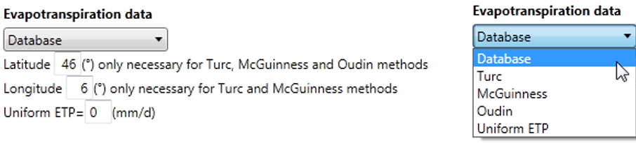
The available methods are presented hereafter in detail.
a. Turc
The potential evapotranspiration proposed by Turc (1955, 1961) is presented in equation Equation 2.9:
\[ ETP = \begin{cases} CoeffETP \cdot K \cdot TT + 15 \cdot (R_g+50) & \quad \text{if } T>0\\ 0 & \quad \text{if } T \leq 0 \end{cases} \qquad(2.9)\]
with \(ETP\): potential evapotranspiration [mm/month]; \(T\): air temperature [°C]; \(R_g\): global radiation [cal/cm^2/day]; \(K\): constant [-].
The constant K value is:
\[ K = \begin{cases} 0.4 & \quad \text{if Month } \neq \text{February}\\ 0.37 & \quad \text{if Month = February} \end{cases} \qquad(2.10)\]
Rg value is a location dependent (latitude and longitude) monthly average of the global radiation.
The global radiation Rg is obtained in [kWh/m^2/day] from the Global horizontal radiation dataset provided by the Surface meteorological and Solar Energy (SSE) web portal, sponsored by the NASA’s Applied Science Program (http://eosweb.larc.nasa.gov/sse). This data comes as a grid (latitude and longitude) and is composed of monthly averaged values.
Rg data takes into account 22 year monthly average (July 1983 - June 2005). The latitude and the longitude values indicate the lower left corner of a 1x1 degree region. Negative values are south and west; positive values are north and east. Boundaries of the -90/-180 region are -90 to -89 (south) and -180 to -179 (west). The last region, 89/180, is bounded by 89 to 90 (north) and 179 to 180 (east). The mid-point of the region is +0.5 added to the latitude/longitude value. These data are regional averages, not point data.
If the user introduces decimals to the latitude/longitude values, the RS MINERVE program calculates the nearest integer value for Rg calculations.
b. McGuinness
McGuinness et Bordne (McGuinness and Bordne 1972) proposes next ETP calculation:
\[ ETP = \begin{cases} CoeffETP \cdot K \cdot \frac{R_g}{\lambda + \rho} \cdot \frac {T_a + 5}{68} & \quad \text{if } T>-5\\ 0 & \quad \text{if } T \leq -5 \end{cases} \qquad(2.11)\]
with \(ETP\): potential evapotranspiration [m/d]; \(R_g\): global radiation [MJ/m^2/day]; \(T_a\): air temperature [°C]; \(\rho\): water density, constant value of 1’000 [kg/m^3] ; \(\lambda\): latent heat of vaporization, constant value of 2.26 [MJ/kg].
Rg value is a location dependent (latitude and longitude) monthly average of the global radiation.
The global radiation Rg is obtained in [kWh/m^2/day] from the Global horizontal radiation dataset provided by the Surface meteorological and Solar Energy (SSE) web portal, sponsored by the NASA’s Applied Science Program (http://eosweb.larc.nasa.gov/sse). This data comes as a grid (latitude and longitude) and is composed of monthly averaged values.
Rg data takes into account 22 year monthly average (July 1983 - June 2005). The latitude and the longitude values indicate the lower left corner of a 1x1 degree region. Negative values are south and west; positive values are north and east. Boundaries of the -90/-180 region are -90 to -89 (south) and -180 to -179 (west). The last region, 89/180, is bounded by 89 to 90 (north) and 179 to 180 (east). The mid-point of the region is +0.5 added to the latitude/longitude value. These data are regional averages; not point data.
If the user introduces decimals to the latitude/longitude values, the RS MINERVE program calculates the nearest integer value for Rg calculations.
c. Oudin
Oudin (Oudin 2004) proposes following equation for the calculation of ETP:
\[ ETP = \begin{cases} CoeffETP \cdot K \cdot \frac{R_e}{\lambda \cdot \rho} \cdot \frac {T + 5}{100} & \quad \text{if } T>-5\\ 0 & \quad \text{if } T \leq -5 \end{cases} \qquad(2.12)\]
with \(ETP\): potential evapotranspiration [m/d]; \(R_e\): extra-terrestrial radiation [MJ m^{-2} d^{-1}]; \(T\): Air temperature [°C]; \(\rho\): water density, constant value of 1’000 [kg/m^3]; \(\lambda\): latent heat of vaporization, constant value of 2.26 [MJ/kg].
Oudin method coefficients (5 and 100) were optimized for the hydrological modelling, on the basis of a study realized on many worldwide watersheds (Oudin 2004).
Latitude are only necessary for obtaining Re values.
The extra-terrestrial radiation Re is calculated as follows: \[ R_e=37.6 \cdot dr \cdot \big( \omega \cdot \sin(\psi) \cdot \sin(\delta) + \sin(\omega) \cdot \cos(\psi) \cdot \cos(\delta)\big) \qquad(2.13)\]
\[ dr=1 + 0.033 \cdot \cos \Big(\frac {2 \cdot \Pi \cdot J_d}{365} \Big) \qquad(2.14)\]
\[ \omega=\arccos (-\tan(\psi) \cdot \tan(\delta)) \qquad(2.15)\]
\[ \delta=0.409 \cdot \sin \Big( \frac{2 \cdot \Pi \cdot J_d}{365} - 1.39\Big) \qquad(2.16)\]
\[ J_d = \begin{cases} 275 \cdot \frac{month}{9} - 30 + Dm & \quad \text{if month} <3\\ 275 \cdot \frac{month}{9} - 31 + Dm & \quad \text{if month} \geq 3 \text{ and leap year = true}\\ 275 \cdot \frac{month}{9} - 32 + Dm & \quad \text{if month} \geq 3 \text{ and leap year = false} \end{cases} \qquad(2.17)\]
with \(dr\): relative distance Sun-Earth [-]; \(\delta\): solar declination [rad]; \(J_d\): Julian day [-]; \(\psi\): latitude, negative in the south hemisphere [rad]; \(\omega\): hour angle of the sun [rad]; \(month\): month of the year, 1 to 12 [-]; \(Dm\):day of the month [-].
d. Uniform ETP
The user can also set a uniform ETP for the whole simulation period and for the entire basin.
\[ ETP=CoeffETP \cdot X \qquad(2.18)\]
with \(X\): uniform ETP [mm/d]
2.3 Snow-SD model description
The Snow-SD (Snow model with a Seasonal Degree-day factor) model (Figure 2.2), inspired by (Schaefli et al. 2005) and (Hamdi, Hingray, and Musy 2005), is composed of two sub-models. They simulate the transient evolution of the snow pack (accumulation and melt) as a function of the temperature (T) and precipitation (P) and produce an equivalent precipitation (Peq) which can be used as an input variable for the SAC-SMA or GR4J model.
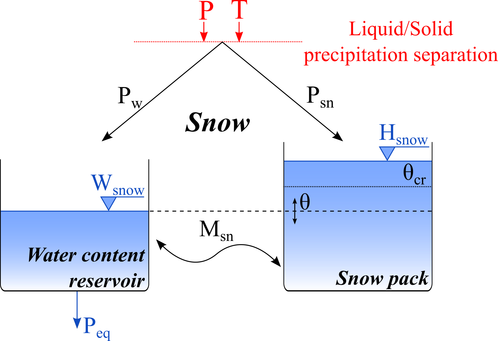
| Name | Units | Decription | Regular range |
|---|---|---|---|
| S | mm/°C/d | Reference degree-day snowmelt coefficient | 0.5 to 20 |
| SInt | mm/°C/d | Degree-day snowmelt interval | 0 to 4 |
| SMin | mm/°C/d | Minimal degree-day snowmelt coefficient | |
| SPh | d | Phase shift of the sinusoidal function | 1 to 365 |
| ThetaCri | - | Critical relative water content of the snow pack | 0.1 |
| bp | d/mm | Melt coefficient due to liquid precipitation | 0.0125 |
| Tcp1 | °C | Minimum critical temperature for liquid precipitation | 0 |
| Tcp2 | °C | Maximum critical temperature for solid precipitation | 4 |
| Tcf | °C | Critical snowmelt temperature | 0 |
| CFR | - | Refreezing coefficient | 0 to 1 |
| SWEIni | m | Initial snow water equivalent height | - |
| ThetaIni | - | Initial relative water content in the snow pack | - |
In a first step, precipitation is separated into solid (Psn) and liquid precipitation (Pw) as a function of the temperature (equations Equation 2.19 to Equation 2.21):
\[ P_w = \alpha \cdot P \qquad(2.19)\]
\[ P_{sn} = (1 - \alpha) \cdot P \qquad(2.20)\]
\[ \alpha = \begin{cases} 0 & \quad \text{if } T \leq T_{cp1}\\ (T - T_{cp1})/(T_{cp2} - T_{cp1}) & \quad \text{if } T_{cp1} < T < T_{cp2}\\ 1 & \quad \text{if } T \geq T_{cp2} \end{cases} \qquad(2.21)\]
with \(P_w\): liquid precipitation [L/T]; \(\alpha\): separation factor; \(P\): precipitation [L/T]; \(P_{sn}\): solid precipitation [L/T]; \(T\): temperature [°C]; \(T_{cp1}\): minimum critical temperature for liquid precipitation [°C]; \(T_{cp2}\): maximum critical temperature for solid precipitation [°C].
If the observed temperature is lower than Tcp1, only solid precipitation is generated. If the temperature is higher than Tcp2, only liquid precipitation (Pw) is present. If the observed temperature is between these two critical values, both phases (liquid and solid) are produced. Solid precipitation (Psn) is used as input for the snow pack, varying its content as a function of melt or freezing. The snowmelt calculation is performed as follows, using a time-varying degree-day snowmelt coefficient with a lower bound as presented in Figure 2.3 (Griessinger et al. 2016, Magnusson et al. 2014, Slater and Clark 2005):
\[ S' = max \Big( S_{Min}\ ;\ S + \ \frac{S_{Int}}{2} \cdot \sin \big( 2\pi \cdot \frac{n - S_{Ph}}{365} \big) \Big) \qquad(2.22)\]
\[ M_{sn} = \begin{cases} S' \cdot (1 + b_p \cdot P_w) \cdot (T - T_{cf}) & \quad \text{if } T > T_{cf}\\ S' \cdot CFR \cdot (T - T_{cf}) & \quad \text{if } T \leq T_{cf} \end{cases} \qquad(2.23)\]
\[ \mathrm{d}H_{snow}/\mathrm{d}t = P_{sn} - M_{sn}, \quad M_{sn} \leq P_{sn} + H_{snow}/\mathrm{d}t, \quad M_{sn} \geq - W_{snow}/\mathrm{d}t \qquad(2.24)\]
with \(S'\) (S Series in RS MINERVE): time-varying degree-day snowmelt coefficient [L/T/°C]; \(S\): reference degree-day snowmelt coefficient [L/T/°C]; \(S_{Int}\): degree-day snowmelt coefficient interval [L/T/°C]; \(n\): day of the year [T]; \(S_{Min}\): Minimal degree-day snowmelt coefficient [L/T/°C]; \(S_{Ph}\): Phase shift of the sinusoidal function [T]; \(M_{sn}\): snowmelt or freezing [L/T]; \(b_p\): melt coefficient due to liquid precipitation [T/L]; \(T_{cf}\): critical snowmelt temperature [°C]; \(CFR\): refreezing coefficient [-]; \(H_{snow}\): water content of the solid fraction of snow [L]; \(dt\): time step [T]; \(W_{snow}\): water content of the liquid fraction of snow [L].
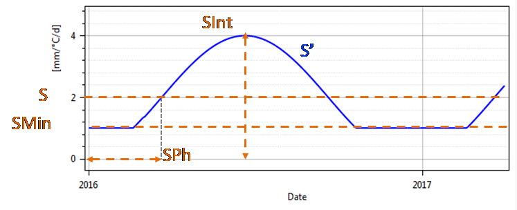
SMin allows to fix a lower limit to the S’ value. The SPh parameter defines the (horizontal) phase shift of the sinusoidal curve with respect to the first day of the year.
The equivalent precipitation (Peq) depends on the water content of the snow (equations Equation 2.25 to Equation 2.27):
\[ \theta = \frac{W_{snow}}{H_{snow}} \qquad(2.25)\]
\[ P_{eq} = \begin{cases} P_w + W_{snow}/\mathrm{d}t & \quad \text{if } H_{snow} = 0\\ 0 & \quad \text{if } H_{snow} > 0 \text{ and } \theta \leq \theta_{cr}\\ (\theta - \theta_{cr}) \cdot H_{snow}/\mathrm{d}t & \quad \text{if } H_{snow} > 0 \text{ and } \theta > \theta_{cr} \end{cases} \qquad(2.26)\]
\[ \mathrm{d}W_{snow}/\mathrm{d}t = P_w + M_{sn} - P_{eq} \qquad(2.27)\]
with \(\theta\) (Theta in RS MINERVE): relative water content in the snow pack [-]; \(\theta_{cr}\) (ThetaCri in RS MINERVE): critical relative water content in the snow pack [-]; \(P_{eq}\): equivalent precipitation [L/T].
The snow water equivalent is then the addition of Hsnow and Wsnow (equation Equation 2.28):
\[ SWE = H_{snow} + W_{snow} \qquad(2.28)\]
with \(SWE\): snow water equivalent [L].
The variables for the initial situation associated to this model are (Theta in RS MINERVE) and SWE. The parameters to adjust are S, SInt and CFR. The parameters SPhi, bp, cr, Tcp1, Tcp2 and Tcf can be assumed as constant (bp = 0.0125, cr = 0.1, Tcp1 = 0 �C, Tcp2 = 4 �C, Tcf = 0 �C, SPhi = 80 (corresponding to March 21st for the Northern hemisphere; use 264 for Southern hemisphere corresponding to September 21)) but can be also be calibrated for some cases.
The refreezing coefficient CFR is similar to the one found for example in HBV (see Section 2.7) and is available for the Snow-SD model in RS MINERVE program from the version 2.8.0. By default, CFR is set to 1, recommended values from the literature are around 0.05.
The input variables of the model are precipitation (P) and temperature (T), the output value is the equivalent precipitation (Peq).
2.4 Runoff (SWMM) model description
The SWMM (Storm Water Management Model) model presented hereafter was developed by Metcalf and Eddy (1971).
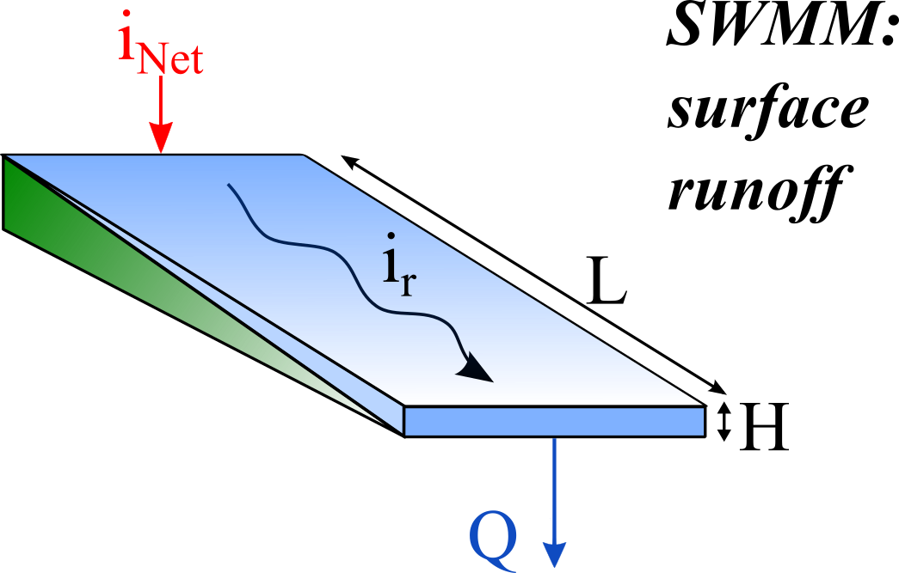
| Name | Units | Description | Regular Range |
|---|---|---|---|
| A | m2 | Surface of runoff |
|
| L | m | Length of the plane |
|
| J0 | - | Runoff slope |
|
| K | m1/3/s | Strickler coefficient | 0.1 to 90 |
| HIni | m | Initial water level downstream of the surface | - |
The transfer of the net intensity to an impermeable surface is carried out by the help of a non-linear transfer reservoir (Figure 2.4) depending on the equations Equation 2.29 to Equation 2.31:
\[ \mathrm{d}H/\mathrm{d}t = 2 \cdot (i_{Net} - i_{r}), \quad H_{r} \geq 0 \qquad(2.29)\]
\[ i_{r} = K \cdot \sqrt{J_{o}} \cdot H^{5/3} \cdot \frac{1}{L} \qquad(2.30)\]
\[ Q = i_{r} \cdot A \qquad(2.31)\]
with \(H\): runoff water level downstream of the surface [L]; \(i_{Net}\): net intensity [L/T]; \(i_r\): runoff intensity [L/T]; \(K\): Strickler coefficient [L1/3/T]; \(J_o\): average slope of the plane [-]; \(L\): length of the plane [L]; \(A\): run-off surface [L2].
The variable for the initial condition associated to the model is Hr. The parameter to adjust is K. The other parameters (Jo, L, A) are supposed to be constant.
The SWMM model, supplied by a hyetograph of net rainfall (iNet), provides a hydrograph downstream of the surface (Q).
2.5 GSM model description
The GSM model (Figure 2.5) is composed of 5 sub-models, two corresponding to the Snow-SD model and the other three corresponding to the glacier model. The present model allows an easy construction of this kind of composition.
From the inputs of precipitation (P) and temperature (T), the snow model creates an equivalent precipitation (Peq) which is transferred to the glacier model. The same accounts for the height of the snow (SWE) and the temperature (T).
In the glacier model the equivalent precipitation is transferred to the linear snow reservoir (Rsn) and finally to the outlet of the sub-catchment (Qsnow). Besides, the sub-model of the glacier melt creates a flow when the height of snow is zero (SWE=0). This glacier flow (PeqGL) is transferred to the linear glacier reservoir (Rgl) and the resulting flow (Qglacier) to the outlet of the sub-catchment.
The final flow (Qtot) produced by the sub-catchment is the addition of the two flows (Qglacier and Qsnow).

| Name | Units | Description | Regular Range |
|---|---|---|---|
| A | m2 | Surface of infiltration |
|
| S | mm/°C/d | Reference degree-day snowmelt coefficient | 0.5 to 20 |
| SInt | mm/°C/d | Degree-day snowmelt interval | 0 to 4 |
| SMin | mm/°C/d | Minimal degree-day snowmelt coefficient | |
| Sph | d | Phase shift of the sinusoidal function | 1 to 365 |
| ThetaCri | - | Critical relative water content of the snow pack | 0.1 |
| bp | d/mm | Melt coefficient due to liquid precipitation | 0.0125 |
| Tcp1 | °C | Minimum critical temperature for liquid precipitation | 0 |
| Tcp2 | °C | Maximum critical temperature for solid precipitation | 4 |
| Tcf | °C | Critical snowmelt temperature | 0 |
| G | mm/°C/d | Reference degree-day glacier melt coefficient | 0.5 to 20 |
| GInt | mm/°C/d | Degree-day glacier melt interval | 0 to 4 |
| GMin | mm/°C/d | Minimal degree-day glacier melt coefficient | |
| Tcg | °C | Critical glacier melt temperature | 0 |
| Kgl | 1/d | Release coefficient of glacier melt reservoir | 0.1 to 5 |
| Ksn | 1/d | Release coefficient of snowmelt reservoir | 0.1 to 5 |
| CFR | - | Refreezing coefficient | 0 to 1 |
| SWEIni | m | Initial snow water equivalent height | - |
| ThetaIni | - | Initial relative water content in the snow pack | - |
| QsnowIni | m3/s | Initial outflow of linear snow reservoir | - |
| QglacierIni | m3/s | Initial outflow of linear glacier reservoir | - |
In a first step, the precipitation is divided into a solid precipitation (Psn) and into a liquid precipitation (Pw) as a function of the temperature (equations Equation 2.32 to Equation 2.34):
\[ P_{w} = \alpha \cdot P \qquad(2.32)\]
\[ P_{sn} = (1 - \alpha) \cdot P \qquad(2.33)\]
\[ \alpha = \begin{cases} 0 & \quad \text{if } T \leq T_{cp1}\\ (T - T_{cp1})/(T_{cp2} - T_{cp1}) & \quad \text{if } T_{cp1} < T < T_{cp2}\\ 1 & \quad \text{if } T \geq T_{cp2} \end{cases} \qquad(2.34)\]
with \(P_w\): liquid precipitation [L/T]; \(\alpha\): separation factor; \(P\): precipitation [L/T]; \(P_{sn}\): solid precipitation [L/T]; \(T\): te*mperature [°C]; \(T_{cp1}\): minimum critical temperature for liquid precipitation [°C]; \(T_cp2\): maximum critical temperature for solid precipitation [°C].
If the observed temperature is lower than Tcp1 only solid precipitation is produced. If the temperature is higher than Tcp2 only liquid precipitation (Pw) is produced. If the temperature observed is found between these two critical values liquid and solid precipitation are produced. The solid precipitation (Psn) is used as input for the snow pack, varying its content as a function of melt or freezing. The snowmelt calculation is performed as follows, using a time-varying degree-day snowmelt coefficient (Figure 2.3) (Magnusson et al. 2014, Slater and Clark 2005)
\[ S^{'} = max \bigg( S_{Min}\ ;\ S + \frac{S_{Int}}{2} \cdot \sin \Big( 2 \pi \cdot \frac{n - S_{Ph}}{365} \Big) \bigg)\ \qquad(2.35)\]
\[ M_{sn} = \begin{cases} S' \cdot (1 + b_p \cdot P_w) \cdot (T - T_{cf}) & \quad \text{if } T > T_{cf} \\ S' \cdot CFR \cdot (T - T_{cf}) & \quad \text{if } T \leq T_{cf} \end{cases} \qquad(2.36)\]
\[ \mathrm{d}H_{snow}/\mathrm{d}t = P_{sn} - M_{sn} , \quad M_{sn} \leq P_{sn} + H_{snow}/\mathrm{d}t , \quad M_{sn} \geq - W_{snow}/\mathrm{d}t \qquad(2.37)\]
with \(S'\) (SSeries in RS MINERVE): time-varying degree-day snowmelt coefficient [L/T/°C]; \(S\): reference degree-day snowmelt coefficient [L/T/°C]; \(S_{Int}\): degree-day snowmelt coefficient interval [L/T/°C]; \(n\): day of the year [T]; \(S_{Min}\): Minimal degree-day snowmelt coefficient [L/T/°C]; \(S_{Ph}\): Phase shift of the sinusoidal function [T]; \(M_{sn}\): snowmelt or freezing [L/T]; \(b_p\): melt coefficient due to liquid precipitation [T/L]; \(T_{cf}\): critical snowmelt temperature [°C]; \(CFR\): refreezing coefficient [-]; \(H_{snow}\): water content of the solid fraction of snow [L]; dt: time step [T]; \(W_{snow}\): water content of the liquid fraction of snow [L].
The Sph parameter defines the phase shift of the sinusoidal curve with respect to the first day of the year.
The equivalent precipitation (Peq) is produced by the water content of the snow (equations Equation 2.38 to Equation 2.40):
\[ \theta = \frac{W_{snow}}{H_{snow}} \qquad(2.38)\]
\[ P_{eq} = \begin{cases} P_{w} + W_{snow}/\mathrm{d}t & \quad \text{if } H_{snow} = 0 \\ 0 & \quad \text{if } H_{snow} > 0 \text{ and } \theta \leq \theta_{cr} \\ (\theta - \theta_{cr}) \cdot H_{snow}/\mathrm{d}t & \quad \text{if } H_{snow} > 0 \text{ and } \theta > \theta_{cr} \end{cases} \qquad(2.39)\]
\[ \mathrm{d}W_{snow}/\mathrm{d}t = P_w + M_{sn} - P_{eq} \qquad(2.40)\]
with \(\theta\) (Theta in RS MINERVE): relative water content in the snow pack [-]; \(\theta_{cr}\) (ThetaCri in RS MINERVE): critical relative water content in the snow pack [-]; \(P_{eq}\): equivalent precipitation [L/T].
The equivalent precipitation Peq is then transferred to the linear snow reservoir (Rsn), generating an outflow according to equations Equation 2.41 and Equation 2.42.
\[ \mathrm{d}H_{Rsn}/\mathrm{d}t = P_{eq} - K_{sn} \cdot H_{Rsn} \qquad(2.41)\]
\[ Q_{snow} = K_{sn} \cdot H_{Rsn} \cdot A \qquad(2.42)\]
with \(P_{eq}\): equivalent precipitation [L/T]; \(H_{Rsn}\): level in linear snow reservoir [L]; \(K_{sn}\): release coefficient of linear snow reservoir [1/T]; \(Q_{snow}\): outflow of linear snow reservoir [L3/T]; \(A\): glacier surface [L2].
The snow water equivalent is then the addition of Hsnow and Wsnow (equation Equation 2.43):
\[ SWE = H_{snow} + W_{snow} \qquad(2.43)\]
with \(SWE\): snow water equivalent [L].
The glacier melt sub-model only provides a discharge when the snow level is zero (Hsnow=0). The water intensity produced by the glacier melt (PeqGL) is transferred to the linear glacier reservoir (Rgl) and the resulting discharge (Qglacier) at the outlet of the sub-catchment.
The glacier melt Qglacier is defined according to equations Equation 2.44 to Equation 2.47:
\[ G' = max \bigg( G_{Min}\ ;\ G + \frac{G_{Int}}{2} \cdot \sin \Big( 2\pi \cdot \frac{n - S_{Ph}}{365} \Big) \bigg) \qquad(2.44)\]
\[ P_{eqGL} = \begin{cases} 0 & \quad \text{if } T \leq T_{cg} \text{ or } H_{snow} > 0 \\ G \cdot (T - T_{cr}) & \quad \text{if } T > T_{cg} \text{ and } H_{snow} = 0 \end{cases} \qquad(2.45)\]
\[ \mathrm{d}H_{Rgl}/\mathrm{d}t = P_{eqGL} - K_{gl} \cdot H_{Rgl} \qquad(2.46)\]
\[ Q_{glacier} = K_{gl} \cdot H_{Rgl} \cdot A \qquad(2.47)\]
with \(P_{eqGL}\): glacier melt [L/T]; ]; \(T_{cg}\): critical glacier melt temperature [°C]; \(G\): degree-day glacier melt coefficient [L/T/°C]; \(G_{Min}\): Minimal degree-day glacier melt coefficient [L/T/°C]; \(H_{Rgl}\):level of glacier melt reservoir [L]; \(K_{gl}\): coefficient of linear glacier reservoir [1/T]; \(Q_{glacier}\): outflow of linear glacier reservoir [L3/T].
And the total discharge is the addition of Qglacier and Qsnow:
\[ Q = Q_{snow} + Q_{glacier} \qquad(2.48)\]
with \(Q\): total outflow [L3/T];
The variables for the initial situation associated to this model are (Theta in RS MINERVE), SWE, HRsn, and HRgl.
The parameters to adjust are S, SInt, CFR, cr, G, GInt, Kgl and Ksn. The parameters Sph, bp, cr, Tcp1, Tcp2, Tcf and Tcg can be assumed as constant (bp = 0.0125, cr = 0.1, Tcp1 = 0 �C, Tcp2 = 4 �C, Tcf = 0 �C, Tcg = 0 �C, SPh = 80 (corresponding to March 21st for the Northern hemisphere; use 264 for Southern hemisphere corresponding to September 21)). The parameter A is supposed to be constant.
The refreezing coefficient CFR is similar to the one found for example in HBV (see Section 2.7) and is available for the GSM model in the RS MINERVE program from its version 2.8.0. By default, CFR is set to 1, recommended values from the literature are around 0.05.
The input variables of the model are the precipitation (P) and the temperature (T). The output is the total discharge (Qtot) at the model outlet.
2.6 SOCONT model description
In the SOCONT model (Figure 2.6), the Snow-SD model simulates the transient evolution of the snow pack (melt and accumulation) as a function of the temperature (T) and the precipitation (P), thus providing an equivalent precipitation (Peq) that is used as input by the GR3 model. The GR3 model also takes into account the potential evapotranspiration (ETP) and provides the net intensity to the SWMM model.
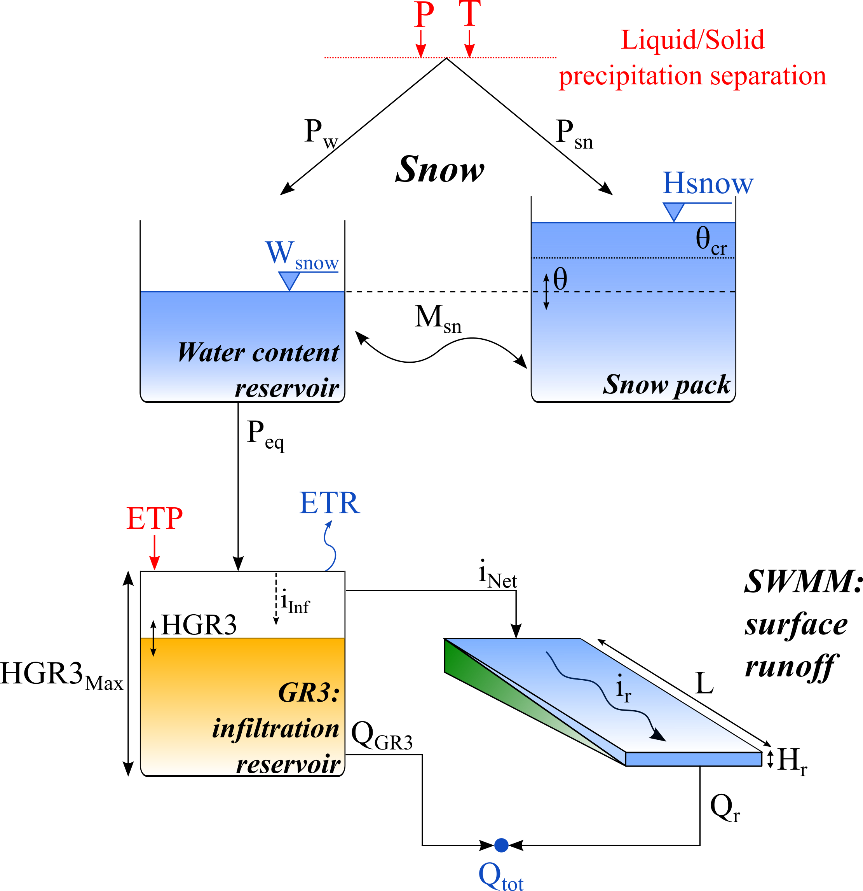
| Name | Units | Description | Regular Range |
|---|---|---|---|
| A | m2 | Surface |
|
| S | mm/°C/d | Reference degree-day snowmelt coefficient | 0.5 to 20 |
| SInt | mm/°C/d | Degree-day snowmelt interval | 0 to 4 |
| SMin | mm/°C/d | Minimal degree-day snowmelt coefficient | |
| SPh | d | Phase shift of the sinusoidal function | 1 to 365 |
| ThetaCri | - | Critical relative water content of the snow pack | 0.1 |
| bp | d/mm | Melt coefficient due to liquid precipitation | 0.0125 |
| Tcp1 | °C | Minimum critical temperature for liquid precipitation | 0 |
| Tcp2 | °C | Maximum critical temperature for solid precipitation | 4 |
| Tcf | °C | Critical snowmelt temperature | 0 |
| HGR3Max | m | Maximum height of infiltration reservoir | 0 to 2 |
| KGR3 | 1/s | Release coefficient of infiltration reservoir | 0.00025 to 0.1 |
| L | m | Length of the plane |
|
| J0 | - | Runoff slope |
|
| Kr | m1/3/s | Strickler coefficient | 0.1 to 90 |
| CFR | - | Refreezing coefficient | 0 to 1 |
| SWEIni | m | Initial snow water equivalent height | - |
| HGR3Ini | m | Initial level in infiltration reservoir | - |
| HrIni | m | Initial runoff water level downstream of the surface | - |
| ThetaIni | - | Initial relative water content in the snow pack | - |
In a first step, the precipitation is divided into a solid precipitation (Psn) and into a liquid precipitation (Pw) as a function of the temperature (equations Equation 2.49 to Equation 2.51):
\[ P_w = \alpha \cdot P \qquad(2.49)\]
\[ P_{sn} = (1 - \alpha) \cdot P \qquad(2.50)\]
\[ \alpha = \begin{cases} 0 & \quad \text{if } T \leq T_{cp1} \\ (T - T_{cp1})/(T_{cp2} - T_{cp1}) & \quad \text{if } T_{cp1} < T < T_{cp2} \\ 1 & \quad \text{if } T \geq T_{cp2} \end{cases} \qquad(2.51)\]
with \(P_w\): liquid precipitation [L/T]; \(\alpha\): separation factor; \(P\): precipitation [L/T]; \(P_{sn}\): solid precipitation [L/T]; \(T\): temperature [°C]; \(T_{cp1}\): minimum critical temperature for liquid precipitation [°C]; \(T_{cp2}\): maximum critical temperature for solid precipitation [°C].
If the observed temperature is lower than Tcp1 only solid precipitation is produced. If the temperature is higher than Tcp2 only liquid precipitation (Pw) is produced. If the temperature observed is found between these two critical values liquid and solid precipitation are produced. The solid precipitation (Psn) is used as input for the snow pack, varying its content as a function of melt or freezing. The snowmelt calculation is performed as follows, using a time-varying degree-day snowmelt coefficient (Figure 2.3) (Magnusson et al. 2014, Slater and Clark 2005):
\[ S' = max\left( S_{Min}\ ;\ S + \ \frac{S_{Int}}{2}\sin\left( 2\pi\frac{n - S_{Ph}}{365} \right) \right) \qquad(2.52)\]
\[ M_{sn} = \begin{cases} S' \cdot (1 + b_{p} \cdot P_{w}) \cdot (T - T_{cf}) & \quad \text{if } T > T_{cf} \\ S' \cdot CFR \cdot (T - T_{cf}) & \quad \text{if } T \leq T_{cf} \end{cases} \qquad(2.53)\]
\[ \mathrm{d}H_{snow}/\mathrm{d}t = P_{sn} - M_{sn}, \quad M_{sn} \leq P_{sn} + H_{snow}/\mathrm{d}t, \quad M_{sn} \geq - W_{snow}/\mathrm{d}t \qquad(2.54)\]
with \(S'\) (SSeries in RS MINERVE): time-varying degree-day snowmelt coefficient [L/T/°C]; \(S\): reference degree-day snowmelt coefficient [L/T/°C]; \(S_{Int}\): degree-day snowmelt coefficient interval [L/T/°C]; \(n\): day of the year [T]; \(S_{Min}\): Minimal degree-day snowmelt coefficient [L/T/°C]; \(S_{Ph}\): Phase shift of the sinusoidal function [T]; \(M_{sn}\): snowmelt or freezing [L/T]; \(b_p\): melt coefficient due to liquid precipitation [T/L]; \(T_{cf}\): critical snowmelt temperature [°C]; \(CFR\): refreezing coefficient [-]; \(H_{snow}\): water content of the solid fraction of snow [L]; \(dt\): time step [T]; \(W_{snow}\): water content of the liquid fraction of snow [L].
The SPh parameter defines the phase shift of the sinusoidal curve with respect to the first day of the year.
The equivalent precipitation (Peq) is produced by the water content of the snow (equations Equation 2.55 to Equation 2.57):
\[ \theta = W_{snow}/H_{snow} \qquad(2.55)\]
\[ P_{eq} = \begin{cases} P_{w} + W_{snow}/\mathrm{d}t & \quad \text{if } H_{snow} = 0 \\ 0 & \quad \text{if } H_{snow} > 0 \text{ and } \theta \leq \theta_{cr} \\ (\theta - \theta_{cr}) \cdot H_{snow}/\mathrm{d}t & \quad \text{if } H_{snow} > 0 \text{ and } \theta > \theta_{cr} \end{cases} \qquad(2.56)\]
\[ \mathrm{d}W_{snow}/\mathrm{d}t = P_w + M_{sn} - P_{eq} \qquad(2.57)\]
with \(\theta\) (Theta in RS MINERVE): relative water content in the snow pack [-]; \(\theta_{cr}\) (ThetaCri in RS MINERVE): critical relative water content in the snow pack [-]; \(P_{eq}\): equivalent precipitation [L/T].
The snow water equivalent is then the addition of Hsnow and Wsnow (equation Equation 2.58):
\[ SWE = H_{snow} + W_{snow} \qquad(2.58)\]
with \(SWE\): snow water equivalent [L].
Next, the infiltration reservoir is computed as follows:
\[ i_{Inf} = \begin{cases} P_{eq} \cdot \big(1 - (H_{GR3}/H_{GR3Max})^{2} \big) & \quad \text{if } H_{GR3} \leq H_{GR3Max} \\ 0 & \quad \text{if } H_{GR3} > H_{GR3Max} \end{cases} \qquad(2.59)\]
\[ ETR = \begin{cases} ETP \cdot \sqrt{ \frac{H_{GR3}}{H_{GR3Max}}} & \quad \text{if } H_{GR3} \leq H_{GR3Max} \\ ETP & \quad \text{if } H_{GR3} > H_{GR3Max} \end{cases} \qquad(2.60)\]
\[ i_{Net} = P_{eq} - i_{Inf} \qquad(2.61)\]
\[ Q = \begin{cases} Q = K_{GR3} \cdot H_{GR3} \cdot A & \quad \text{if } H_{GR3} \leq H_{GR3Max} \\ Q = K_{GR3} \cdot H_{GR3Max} \cdot A & \quad \text{if } H_{GR3} > H_{GR3Max} \end{cases} \qquad(2.62)\]
\[ \mathrm{d}H_{GR3}/\mathrm{d}t = i_{Inf} - ETR - \frac{Q}{A} \qquad(2.63)\]
with \(ETP\): potential evapotranspiration [L/T]; \(i_{Inf}\): infiltration intensity [L/T]; \(P_{eq}\): equivalent precipitation [L/T]; \(H\): level in infiltration reservoir [L]; \(H_{GR3Max}\): capacity of infiltration reservoir [L]; \(ETR\): real evapotranspiration [L/T]; \(Q\): base discharge [L3/T]; \(K_{GR3}\): release coefficient of infiltration reservoir [1/T]; \(A\): surface [L2]; \(i_{Net}\): net intensity [L/T].
The transfer of the net intensity to an impermeable surface is carried out by the help of a non-linear transfer reservoir depending on the equations Equation 2.64 to Equation 2.66:
\[ \mathrm{d}H_{r}/\mathrm{d}t = 2 \cdot (i_{Net} - i_{r}), \quad H_{r} \geq 0 \qquad(2.64)\]
\[ i_{r} = K_{r} \cdot \sqrt{J_{o}} \cdot {H_{r}}^{\frac{5}{3}} \cdot \frac{1}{L} \qquad(2.65)\]
\[ Q = i_{r} \cdot A \qquad(2.66)\]
with \(H_r\): runoff water level downstream of the surface [L]; \(i_{Net}\): net intensity [L/T]; \(i_r\): runoff intensity [L/T]; \(K_r\): Strickler coefficient [L1/3/T]; \(J_o\): average slope of the plane [-]; \(L\): length of the plane [L].
The variables for the initial situation associated to this model are (Theta* in RS MINERVE), SWE, HGR3 and Hr. The parameters to adjust are S, SInt, bp, CFR, cr, KGR3, HGR3Max and Kr. The parameters SPhi, bp, cr, Tcp1, Tcp2 and Tcf can be assumed as constant (bp = 0.0125, \thetacr = 0.1, Tcp1 = 0 �C, Tcp2 = 4 �C, Tcf = 0 �C, SPhi = 80 (corresponding to March 21st for the Northern hemisphere; use 264 for Southern hemisphere corresponding to September 21)). The other parameters (Jo, L, A) are supposed to be constant.
The refreezing coefficient CFR is similar to the one found for example in HBV (see Section 2.7) and is available for the SOCONT model in the RS MINERVE program from its version 2.8.0. By default, CFR is set to 1; recommended values from the literature are around 0.05.
The input variables of the model are the precipitation (P), the temperature (T) and the potential evapotranspiration (ETP). The output value is the equivalent precipitation (Peq).
The outflow discharge Qtot, composed by the base discharge (QGR3) and the run-off discharge (Qr), is finally transferred to the outlet of the sub-catchment.
2.7 HBV model description
The integrated rainfall-runoff model HBV (Bergström, 1976, 1992) is composed of a snow function, a humidity reservoir and two (upper and lower) soil storage reservoirs. The structure of the implemented model is presented in Figure 2.7.
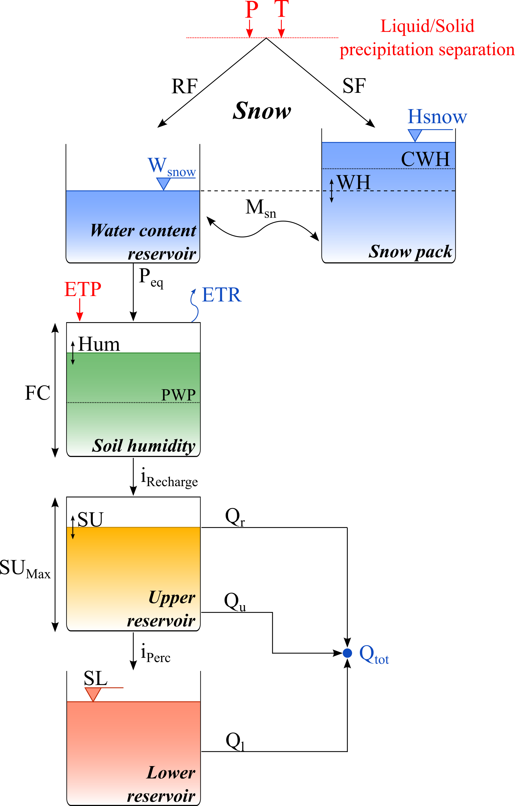
| Name | Units | Description | Regular Range |
|---|---|---|---|
| A | m2 | Surface of the basin |
|
| CFMax | mm/°C/d | Melting factor | 0.5 to 20 |
| CFR | - | Refreezing factor | 0.05 |
| CWH | - | Critical relative water content of the snow pack | 0.1 |
| TT | °C | Threshold temperature of rain/snow | 0 to 3 |
| TTInt | °C | Temperature interval for rain/snow mixing | 0 to 3 |
| TTSM | °C | Threshold temperature for snow melt | 0 |
| Beta | - | Model parameter (shape coefficient) | 1 to 5 |
| FC | m | Maximum soil storage capacity | 0.050 to 0.65 |
| PWP | - | Soil permanent wilting point threshold | 0.030 to 1 |
| SUMax | m | Upper reservoir water level threshold | 0 to 0.10 |
| Kr | 1/d | Near surface flow storage coefficient | 0.05 to 0.5 |
| Ku | 1/d | Interflow storage coefficient | 0.01 to 0.4 |
| Kl | 1/d | Baseflow storage coefficient | 0 to 0.15 |
| Kperc | 1/d | Percolation storage coefficient | 0 to 0.8 |
| SWEIni | m | Initial snow water equivalent height | - |
| WHIni | - | Initial relative water content in the snow pack | - |
| HumIni | m | Initial humidity | - |
| SUIni | m | Initial upper reservoir water level | - |
| SLIni | m | Initial lower reservoir water level | - |
The precipitation is first divided into snowfall (SF) and rainfall (RF) as a function of the temperature (equations Equation 2.106 to Equation 2.108). If the observed temperature is lower than TT-TTInt/2, only solid snowfall is produced. If the temperature is higher than TT+TTInt/2, only rainfall is produced. If the observed temperature is found between these values, both rainfall and snowfall are produced.
\[ RF = \alpha \cdot P \qquad(2.67)\]
\[ SF = (1 - \alpha) \cdot P \qquad(2.68)\]
\[ \alpha = \begin{cases} 0 & \quad \text{if } T < TT - TTInt/2 \\ \frac{T - (TT - TTInt/2)}{TTInt} & \quad \text{if } TT - TTInt/2 < T < TT + TTInt/2 \\ 1 & \quad \text{if } T > TT + TTInt/2 \end{cases} \qquad(2.69)\]
with \(RF\): rainfall [L/T]; \(\alpha\): separation factor; \(P\): precipitation [L/T]; \(SF\): snowfall [L/T]; \(T\): temperature [°C]; \(TT\): threshold temperature for rain/snow [°C]; \(TTInt\): temperature interval for rain/snow mixing [°C].
The snowfall (SF) is used as input for the snow pack, varying its content as a function of melt or freezing. The snowmelt calculation is performed as follows:
\[ M_{sn} = \begin{cases} CFMax \cdot (T - TTSM) & \quad \text{if } T > TTSM \\ CFR \cdot CFMax \cdot (T - TTSM) & \quad \text{if } T \leq TTSM \end{cases} \qquad(2.70)\]
\[ \mathrm{d}H_{snow}/\mathrm{d}t = SF - M_{sn} , \quad M_{sn} \leq SF + H_{snow}/\mathrm{d}t, \quad M_{sn} \geq - W_{snow}/\mathrm{d}t \qquad(2.71)\]
with \(M_{sn}\): snowmelt or freezing [L/T]; \(CFMax\): degree-day melting factor [L/T/°C]; \(CFR\): refreezing factor [-]; \(TTSM\): critical snowmelt temperature [°C]; \(H_{snow}\): snow height [L]; \(W_{snow}\): water content [L]; \(dt\): time step [T].
The equivalent precipitation (Peq) is produced by the water content of the snow (equations Equation 2.72 to Equation 2.74):
\[ WH = W_{snow}/H_{snow} \qquad(2.72)\]
\[ P_{eq} = \begin{cases} RF + W_{snow}/\mathrm{d}t & \quad \text{if } H_{snow} = 0 \\ 0 & \quad \text{if } H_{snow} > 0 \text { and } WH \leq CWH \\ (\ WH - \ CWH) \cdot H_{snow}/\mathrm{d}t & \quad \text{if } H_{snow} > 0 \text { and } WH > CWH \end{cases} \qquad(2.73)\]
\[ \mathrm{d}W_{snow}/\mathrm{d}t = RF + M_{sn} - P_{eq} \qquad(2.74)\]
with \(WH\): relative water content in the snow pack [-]; \(CWH\): critical relative water content in the snow pack [-]; \(P_{eq}\): equivalent precipitation [L/T].
The snow water equivalent is then the addition of Hsnow and Wsnow (equation Equation 2.75):
\[ SWE = H_{snow} + W_{snow} \qquad(2.75)\]
with \(SWE\): snow water equivalent [L].
The calculation of the recharge is carried out depending on a model parameter Beta, as presented in equation Equation 2.115. ETR is calculated as shown in equation Equation 2.116. Finally, the humidity of the soil (Hum) is performed taking into account the input (Equivalent precipitation, Peq) and outputs (Recharge intensity and ETR) as presented in equation Equation 2.117. Additionally, and based on Seibert (1997), parameter PWP is a rate related to parameter FC. Thus, the height of the soil permanent wilting point threshold is calculated multiplying PWP by FC.
\[ i_{Recharge} = \Bigg( \frac{Hum}{FC} \Bigg)^{Beta} \cdot P_{eq} \qquad(2.76)\]
\[ ETR = \begin{cases} ETP \cdot \frac{Hum}{(PWP \cdot FC)} & \quad \text{if } Hum < (PWP \cdot FC) \\ ETP & \quad \text{if } Hum \geq (PWP \cdot FC) \end{cases} \qquad(2.77)\]
\[ \frac{dHum}{dt} = (P_{eq} - i_{Recharge}) - ETR, \quad Hum \geq 0 \qquad(2.78)\]
with \(i_{Recharge}\): Reservoir recharge intensity [L/T] ; \(Hum\): Humidity [L]; \(FC\): Maximum soil storage capacity [L] ; \(Beta\): Model parameter (shape coefficient) [-]; \(P_{eq}\): Equivalent precipitation [L/T]; \(ETR\): Evapotranspiration [L/T] ; \(ETP\): Potential evapotranspiration [L/T] ; \(PWP\): Soil permanent wilting point threshold [-].
Then, near surface (or run-off) flow is calculated depending on the water level in the Upper reservoir (SU) and its threshold, as well as on a flow storage coefficient Kr.
\[ Q_r = \begin{cases} K_{r} \cdot (SU - SU_{Max}) \cdot A & \quad \text{if } SU > SU_{Max} \\ 0 & \quad \text{if } SU \leq SU_{Max} \end{cases} \qquad(2.79)\]
with \(Q_r\): Near surface flow (or run-off flow) [L3/T]; \(K_r\): Near surface flow storage coefficient [1/T]; \(SU\): Upper reservoir water level [L]; \(SU_{Max}\): Upper reservoir water level threshold [L]; \(A\): Basin surface [L2].
The Upper reservoir (or interflow reservoir), corresponding to the upper soil storage and producing the interflow, is computed as follows:
\[ \frac{dSU}{dt} = i_{Recharge} - (K_{perc} + K_{u}) \cdot SU - \frac {Q_{r}}{A} , \quad SU \geq 0 \\ \qquad(2.80)\]
\[ i_{Perc} = K_{perc} \cdot SU \qquad(2.81)\]
\[ Q_{u} = K_{u} \cdot SU \cdot A \qquad(2.82)\]
with \(K_{perc}\): Percolation storage coefficient [1/T] ; \(K_u\): Interflow storage coefficient [1/T] ; \(i_{Perc}\): Percolation intensity [L/T] ; \(Q_u\): Interflow [L3/T].
Afterwards, the lower reservoir (or baseflow reservoir), corresponding to the lower soil storage, is calculated as presented in equations Equation 2.83 and Equation 2.84.
\[ \mathrm{d}SL/\mathrm{d}t = i_{Perc} - K_{l} \cdot SL , \quad SL \geq 0 \qquad(2.83)\]
\[ Q_{l} = K_{l} \cdot SL \cdot A \qquad(2.84)\]
with \(SL\): Lower reservoir water level [L]; \(K_l\): Baseflow storage coefficient [1/T]; \(Q_l\): Baseflow [L3/T].
And finally the total outflow is:
\[ Q_{tot} = Q_{r} + Q_{u} + Q_{l} \qquad(2.85)\]
with \(Q_{tot}\): Total outflow [L3/T].
The initial conditions associated to this model are SWEIni, WHIni, HumIni, SUIni and SLIni. The parameters to adjust are CFMax, CFR, CWH, TT, TTInt, TTSM, Beta, FC, PWP, SUmax, Kr, Ku, Kl and Kperc. The parameter A is supposed to be constant.
The model inputs are the precipitation (P), the temperature (T) and the potential evapotranspiration (ETP). The output is the total discharge at the model outlet (Qtot).
2.8 GR4J model description
The GR4J model is a global hydrological model with four parameters developed by Perrin et al. (2003). It is an empirical model (Figure 2.8), but its structure is similar to the conceptual models. It takes into account the humidity and contains two reservoirs (production and routing). Unit hydrographs are also associated for the hydrological behaviour of the basin.
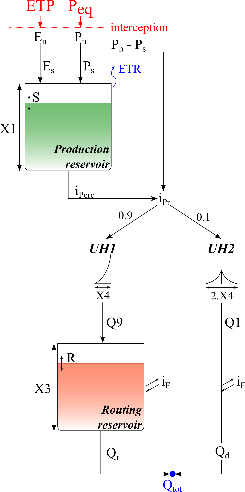
| Name | Units | Description | Regular Range |
|---|---|---|---|
| A | m2 | Surface of the basin |
|
| X1 | m | Capacity of production store | 0.01 to 1.2 |
| X2 | m | Water exchange coefficient | -0.005 to 0.003 |
| X3 | m | Capacity of routing store | 0.01 to 0.5 |
| X4 | d | UH time base | -0.5 to 1 |
| SIni | m | Initial water content in the production reservoir | - |
| RIni | m | Initial water level in the routing reservoir | - |
The first calculation is the neutralization of Peq by ETP for determining a net intensity (Pn) and a net evapotranspiration (En) according to equations Equation 2.86 and Equation 2.87.
\[ P_n = \begin{cases} P_{eq} - ETP & \quad \text{if } P \geq ETP \\ 0 & \quad \text{if } P < ETP \end{cases} \qquad(2.86)\]
\[ E_n = \begin{cases} 0 & \quad \text{if } P \geq ETP \\ ETP - P_{eq} & \quad \text{if } P < ETP \end{cases} \qquad(2.87)\]
with \(P_n\): net rain intensity [L/T] ; \(P_{eq}\) : Equivalent precipitation [L/T] ; ETP: potential evapotranspiration [L/T] ; \(E_n\): net evapotranspiration [L/T].
When Pn is not zero, a part (Ps) of Pn feed the production reservoir (S) as presented in equation Equation 2.88. Similarly, when En is not zero, an evapotranspiration (Es) from the production reservoir is calculated depending on the water level in the production reservoir as described in equation Equation 2.89.
\[ P_s = \frac{\mathrm{d}}{\mathrm{d} t} \frac {X1 \cdot \bigg( 1-{( \frac{S}{X1})}^{2} \bigg) \cdot tanh \Big( \frac{P_n \cdot dt}{X1} \Big)}{1 + \frac{S}{X1} \cdot tanh\Big( \frac{P_n \cdot dt}{X1} \Big)} \qquad(2.88)\]
\[ E_s = \frac{\mathrm{d}}{\mathrm{d} t} \frac {S \cdot \bigg( 2- \frac{S}{X1} \bigg) \cdot tanh \Big( \frac{E_n \cdot dt}{X1} \Big)}{1 + \Big( 1 - \frac{S}{X1} \Big) \cdot tanh\Big( \frac{E_n \cdot dt}{X1} \Big)} \qquad(2.89)\]
with \(P_s\): rain intensity feeding the production reservoir [L/T]; \(X1\): maximum capacity of production reservoir \(S\) [L] ; \(S\) : water content in the production reservoir [L]; \(E_s\) : evapotranspiration from the production reservoir [L/T].
The percolation (iPerc) flowing from the production reservoir is then calculated as follows:
\[ i_{Perc} = \frac {\mathrm{d}}{\mathrm{d} t} \big( S + (P_s - E_s) \cdot dt \big) \cdot \Bigg( 1 - \bigg( 1 + \Big( \frac{4}{9} \cdot \frac{ S + (P_s - E_s) \cdot dt}{X1} \Big)^{4} \bigg)^{- \frac{1}{4}} \Bigg) \qquad(2.90)\]
with \(i_{Perc}\): percolation intensity [L/T].
Finally, the variation in the production reservoir S is obtained according to equation Equation 2.91:
\[ \frac {\mathrm{d} S}{\mathrm{d} t} = P_s - E_s - i_{Perc} , \quad S \geq 0 \qquad(2.91)\]
The quantity of water (iPr) which goes to the routing reservoir is provided by:
\[ i_{Pr} = i_{Perc} + (P_n - P_s) \qquad(2.92)\]
with \(i_{Pr}\) : intensity flowing to the routing reservoir [L/T].
Afterwards, for the calculation of unit hydrographs, iPr is divided in two flow components: 90% are routed by a unit hydrograph UH1 and a routing reservoir and 10% by a symmetrical unit hydrograph UH2. UH1 and UH2 depend on parameter X4, which is the base time.
The ordinates of the hydrographs are calculated from curves SH1 and SH2, which correspond to the cumulated hydrograph. SH1 and SH2 are defined depending on the time step t as presented in equation Equation 2.93 and Equation 2.94. The ordinates of UH1 and UH2 are then calculated.
\[ SH1_{t} = \begin{cases} 0 & \quad \text{if } t \leq 0 \\ \bigg( \frac{t}{X4} \bigg)^{\frac{5}{2}} & \quad \text{if } 0 < t < X4 \\ 1 & \quad \text{if } t \geq X4 \end{cases} \qquad(2.93)\]
\[ SH2_{t} = \begin{cases} 0 & \quad \text{if } t \leq 0 \\ \frac{1}{2} \cdot \bigg( \frac{t}{X4} \bigg)^{\frac{5}{2}} & \quad \text{if } 0 < t < X4 \\ 1 - \frac{1}{2} \cdot \bigg( 2 - \frac{t}{X4} \bigg)^{\frac{5}{2}} & \quad \text{if } X4 < t < 2 \cdot X4 \\ 1 & \quad \text{if } t \geq 2 \cdot X4 \\ \end{cases} \qquad(2.94)\]
\[ UH1_{j} = SH1_{j} - SH1_{j - 1} \qquad(2.95)\]
\[ UH2_{j} = SH2_{j} - SH2_{j - 1} \qquad(2.96)\]
with \(SH1\): hydrograph 1 from \(S\) [-]; \(SH2\): hydrograph 2 from \(S\) [-]; \(t\): time step [T]; \(X4\): base time [T]; \(UH1\): hydrograph from SH1 [-]; \(UH2\): hydrograph from \(SH2\) [-].
Then, at each time step k, outflows Q9 and Q1 from the two hydrographs correspond to the convolution of previous intensities according to the repartition provided by the discretized hydrograph and calculated as presented in equations Equation 2.97 and Equation 2.98.
\[ Q9 = 0.9 \cdot \sum_{j = 1}^{l} ( UH1_{j} \cdot {i_{Pr}}_{k - j - l}) \qquad(2.97)\]
\[ Q1 = 0.1 \cdot \sum_{j = 1}^{m} ( UH2_{j} \cdot {i_{Pr}}_{k - j - l}) \qquad(2.98)\]
with \(Q9\): Unitary flow from the UH1 hydrograph; [L/T]; \(Q1\): Unitary flow from the UH2 hydrograph [L/T]; \(j\): day (integer) [T]; \(l\): integer value of \(X4 + 1\) [T] ; \(m\): integer value of \(2 \cdot X4+1\) [T].
Then, an exchange function (iF) with the non-atmospheric outside produces an underground water exchange according to equation Equation 2.99 (physical interpretation of this function is not direct). Then, the routing reservoir (R) is emptied by a routing discharge (Qr’) as described in equation Equation 2.100.
\[ i_F = \frac{\mathrm{d}}{\mathrm{d} t}X2 \cdot \bigg( \frac{R}{X3} \bigg)^{\frac{7}{2}} \qquad(2.99)\]
\[ Q_{r'} = \frac{\mathrm{d}}{\mathrm{d} t} \big( R + (Q9 + iF) \cdot dt \big) \cdot \Bigg( 1 - \bigg( 1 + \Big( \frac{R + (Q9 + iF) \cdot dt}{X3} \Big)^{4} \bigg)^{- \frac{1}{4}} \Bigg) \qquad(2.100)\]
with \(i_F\): exchange function [L/T] ; \(X2\): water exchange coefficient, positive for contributions, negative for losses due to infiltration or zero when no exchange is produced [L]; \(R\): water level in the routing reservoir [L] ; \(X3\): one day capacity of routing reservoir [L]; \(Q_{r'}\): unitary routing reservoir outflow [L/T].
The variation of the water level in the routing reservoir is:
\[ \mathrm{d}R/\mathrm{d}t = Q9 - i_F - Q_{r'} , \quad R \geq 0 \qquad(2.101)\]
The outflow Q1 from hydrograph UH2 has also the same exchange for providing the complementary flow Qd’:
\[ Q_{d'} = Q1 + i_F \qquad(2.102)\]
with \(Q_{d'}\): unitary complementary outflow [L/T].
Finally, the model outflows are calculated as presented in equations Equation 2.103 and Equation 2.104 and the total flow at the outlet, Qtot, as presented in equation Equation 2.105:
\[ Q_r = Q_{r'} \cdot A \qquad(2.103)\]
\[ Q_d = Q_{d'} \cdot A \qquad(2.104)\]
\[ Q_{tot} = Q_r + Q_d \qquad(2.105)\]
with \(Q_r\): outflow from the routing reservoir [L3/T]; \(A\): Basin surface [L2]; \(Q_d\): complementary outflow [L3/T]; \(Q_{tot}\): total outflow [L3/T].
The variables associated to this model are SIni and RIni. The parameters to adjust are X1, X2, X3 and X4. The parameter A is supposed to be constant.
The model inputs are the equivalent precipitation (Peq) and the potential evapotranspiration (ETP). The output is the total discharge at the model outlet (Qtot).
2.9 SAC-SMA model description
The SAC-SMA (Figure 2.9) or SACRAMENTO hydrological model was developed in the 70’s (Burnash et al., 1973; Burnash, 1995) to optimize humidity characteristics into the soil, distributed into different level, with rational percolation characteristics, for an efficient simulation of discharges. This model calculates the total discharge from the precipitation (P) and the potential evapotranspiration (ETP) depending on the parameters and initial conditions presented in Table 2.8.
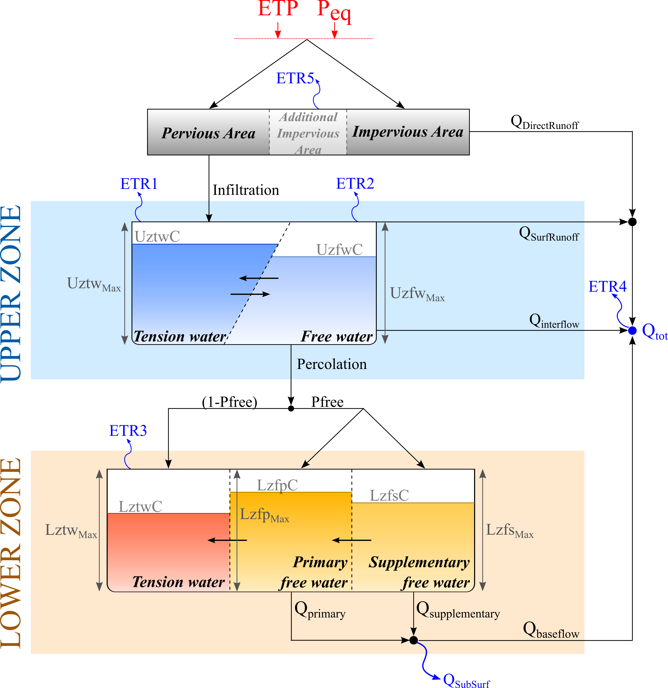
| Name | Units | Description | Regular Range |
|---|---|---|---|
| A | m2 | Surface of the basin |
|
| Adimp | - | Maximum fraction of an additional impervious area due to saturation | 0 to 0.2 |
| Pctim | - | Permanent impervious area fraction | 0 to 0.05 |
| Riva | - | Riparian vegetarian area fraction | 0 to 0.2 |
| UztwMax | m | Upper Zone Tension Water capacity | 0.01 to 0.15 |
| UzfwMax | m | Upper Zone Free Water capacity | 0.005 to 0.10 |
| Uzk | 1/d | Interflow depletion rate from the Upper Zone Free Water storage | 0.10 to 0.75 |
| Zperc | - | Ratio of maximum and minimum percolation rates | 10 to 350 |
| Rexp | - | Shape parameter of the percolation curve | 1 to 4 |
| Pfree | - | Percolation fraction that goes directly to the Lower Zone Free Water storages | 0 to0.6 |
| LztwMax | m | The Lower Zone Tension Water capacity | 0.05 to 0.40 |
| LzfpMax | m | The Lower Zone primary Free Water capacity | 0.03 to 0.80 |
| LzfsMax | m | The Lower Zone supplementary Free Water capacity | 0.01 to 0.40 |
| Rserv | - | Fraction of Lower Zone Free Water not transferable to Lower Zone Tension Water | 0 to 1 |
| Lzpk | 1/d | Depletion rate of the Lower Zone primary Free Water storage | 0.001 to 0.03 |
| Lzsk | 1/d | Depletion rate of the Lower Zone supplemental Free Water storage | 0.02 to 0.3 |
| Side | - | Ratio of deep percolation from Lower Zone Free Water storages | 0 to 0.5 |
| AdimIni | m | Initial Tension Water content of the Adimp area | - |
| UztwIni | m | Initial Upper Zone Tension Water content | - |
| UzfwIni | m | Initial Upper Zone Free Water content | - |
| LztwIni | m | Initial Lower Zone Tension Water content | - |
| LzfpIni | m | Initial Lower Zone Free supplementary content | - |
| LzfsIni | m | Initial Lower Zone Free primary content | - |
When considering rainfall over a basin, two basic basin areas are taken into account:
An impervious portion of the soil mantle covered by streams, lake surfaces, marshes and other impervious material directly linked to the streamflow network. This area produces impervious and direct runoff QDirectRunoff from any rainfall.
A pervious portion of the soil mantle which distributes rainwater to the next storages. In addition, the pervious area can produce runoff when rainfall rates are sufficiently heavy.
The basin may present permanent or temporarily impervious areas, determined by:
The permanent impervious area fraction (Pctim).
The maximum fraction of an additional impervious area due to saturation (Adimp). It represents the maximum portion of reservoirs and temporary watersheds contained in the basin.
Thus, the permanent pervious area fraction of the basin is calculated following equation Equation 2.106.
\[ P_{area} = 1 - (P_{ctim} + A_{dimp}) \qquad(2.106)\]
with \(P_{area}\): permanent pervious area fraction of the basin [-] ; \(P_{ctim}\): permanent impervious area fraction [-] ; \(A_{dimp}\): maximum fraction of an additional impervious area due to saturation [-].
It is worth mentioning that the behaviour of the additional impervious area might be purely pervious, purely impervious or mixed, depending on the storage of the permanent pervious and impervious areas. The pervious capacity (or fraction) of this area will decrease as the rainfall grows.
As shown in Figure 2.9, the SAC model divides the soil in 2 zones:
An Upper Zone, sub-divided in two areas that receive the infiltrated water from rainfall.
A Lower Zone, sub-divided in 3 reservoirs, where the input is the percolation from the Upper Zone.
The main components of the model and their flow transfers are described below.
Upper Zone Tension Water storage
This storage represents the water bound by adhesion and cohesion in between the soil pores as well as the water intercepted by vegetation. The water can be only consumed by evapotranspiration.
The water that reaches this reservoir comes from the rain felt into the pervious area of the basin, but also from transfers from the Upper Zone Free Water storage.
The following concepts are defined for this reservoir:
The Upper Zone Tension Water Maximum capacity (UztwMax) is the maximum Tension Water storage admissible in the Upper Zone.
The Upper Zone Tension Water Content (UztwC) is the Tension Water stored in this Upper Zone at any given time.
If the relative content of Tension Water (ratio between its content and its maximum storage) is smaller than the relative content of Free Water, a transfer is produced from the Free Water storage to the Tension Water storage. The expressions of these ratios and the infiltration transfer are shown in equations Equation 2.107 to Equation 2.109:
\[ T = \frac{UztwC}{Uztw_{Max}} \qquad(2.107)\]
\[ F = \frac{UzfwC}{Uzfw_{Max}} \qquad(2.108)\]
\[ Uztr = \begin{cases} \mathrm{d} \bigg( \frac{UzfwC \cdot Uztw_{Max} - UztwC \cdot Uzfw_{Max}}{Uzfw_{Max} + Uztw_{Max}} \bigg) / \mathrm{d}t & \quad \text{if } T < F \\ 0 & \quad \text{if } T \geq F \end{cases} \qquad(2.109)\]
with \(T\): relative content of Upper Zone Tension Water [-]; \(F\): relative content of Upper Zone Free Water [-]; \(Uztr\): infiltration transfer from the Free Water storage to the Tension Water storage [L/T]; \(UztwC\): the Upper Zone Tension Water storage [L]; \(Uztw_{Max}\): the Upper Zone Tension Water capacity [L]; \(UzfwC\): the Upper Zone Free Water storage [L]; \(Uzfw_{Max}\): the Upper Zone Free Water capacity [L].
Although free water is present during filling of Upper Zone Tension Water (by infiltration), this free water is rapidly transformed into Upper Zone Tension Water until tension water relative content requirements are satisfied.2
In addition, when the Upper Zone Tension Water volume has been filled, excess moisture above the Upper Zone Tension Water capacity is accumulated in the Upper Zone Free Water.
Upper Zone Free Water storage
This storage represents the water not attached to the soil particles and free to move under gravitational forces. The water that reaches this reservoir comes from the infiltration of the Upper Zone Tension Water storage
The following concepts are defined:
The Upper Zone Free Water Maximum capacity (UzfwMax) is the maximum Free Water storage admissible in the Upper Zone.
The Upper Zone Free Water Content (UzfwC) is the Free Water stored in the Upper Zone at any given time.
The Interflow depletion rate (Uzk) represents the portion of the Upper Zone Free Water that is transferred outside as interflow.
The water may be depleted by evapotranspiration, percolation to the Lower Zone or horizontal flow (surface runoff and interflow).
On the one hand, the percolation to the Lower Zone is computed prior to the interflow computation as it is its preferred path. It depends on the deficiency of the Lower Zone moisture volumes, on the soil properties, and on the water relative storage in this reservoir. The first 2 factors define the percolation demand from the Lower Zone (DDA). This demand represents the percolation in case of total percolation availability on the Upper Zone Free Water storage.
\[ P_{Base} = Lzfp_{Max} \cdot Lzpk + Lzfs_{Max} \cdot Lzsk \qquad(2.110)\]
\[ DEFR = \frac{(Lztw_{Max} - LztwC) + (Lzfp_{Max} - LzfpC) + (Lzfs_{Max} - LzfsC)}{Lztw_{Max} + Lzfp_{Max} + Lzfs_{Max}} \qquad(2.111)\]
\[ DDA = P_{Base} \cdot (1 + Zperc \cdot {DEFR}^{Rexp}) \qquad(2.112)\]
with \(P_{Base}\): the continuing percolation rate under saturated condition (maximal percolation) [L/T]; \(DDA\): Lower Zone maximum percolation demand [L/T]; \(Zperc\): ratio of maximum and minimum percolation rates [-]; \(DEFR\): relative Lower Zone water deficiency [-]; \(Rexp\): shape parameter of the percolation curve [-].
The effective percolation depends on the percolation demand and the ratio between the Upper Zone Free Water content and the Upper Zone Free Water capacity as shown in equation Equation 2.113. In addition, the effective percolation is limited by the humidity content in the Upper Zone and also by the deficiency in the Lower Zone (equations Equation 2.114 and Equation 2.115 respectively):
\[ PERC = DDA \cdot \frac{UzfwC}{Uzfw_{Max}} \qquad(2.113)\]
\[ PERC \leq \mathrm{d}(UzfwC)/\mathrm{d}t \qquad(2.114)\]
\[ PERC \leq \mathrm{d} \Big( (Lztw_{Max} - LztwC) + (Lzfp_{Max} - LzfpC) + (Lzfs_{Max} - LzfsC) \Big) / \mathrm{d}t \qquad(2.115)\]
with \(PERC\): real percolation [L/T]; \(DDA\): Lower Zone maximum percolation demand [L/T]; \(UzfwC\): Upper Zone Free Water content [L]; \(Uzfw_{Max}\): Upper Zone Free Water capacity [L].
On the other hand, the interflow occurs only when the rate of precipitation exceed the rate at which downward motion can occur from the Upper Zone Free Water. It depends on the water content and on its interflow depletion rate Uzk, as shown in equation Equation 2.116:
\[ Q_{interflow} = Uzk \cdot UzfwC \cdot P_area \cdot A \qquad(2.116)\]
with \(Q_{interflow}\): interflow [L3/T]; \(Uzk\): interflow depletion rate from the Upper Zone Free water storage [T-1]; \(UzfwC\): Upper Zone Free Water content [L]; \(P_{area}\): pervious area fraction of the basin [-]; \(A\): surface of the basin [L2].
Moreover, when the Upper Zone Free Water storage is completely full and the precipitation intensity exceeds both the percolation rate and the maximum interflow drainage capacity, the excess precipitation results in surface runoff QSurfRunoff.
Lower Zone Tension Water storage
This storage represents the semi-saturated zone. It characterizes the volume of moisture in the lower soils which will be claimed by dry soil particles when moisture from a wetting front reaches that depth. The water is consumed through evapotranspiration, proportionally to the remaining ETP of the Upper Zone Tension Water storage.
The water reaching this reservoir comes from the Upper Zone percolation. One fraction (Pfree) of this percolation goes directly to the Free Water storages, even if the Tension Water storage is not yet full, and the other fraction (1-Pfree) goes to the Tension Water storage of the Lower Zone 3. The water also reaches this storage from transfers between the other Lower Zone Free Water storages.
The following concepts are defined:
The Lower Zone Tension Water Maximum capacity (LztwMax) is the maximum Tension Water storage admissible in the Lower Zone.
The Lower Zone Tension Water Content (LztwC) is the Tension Water stored in the Lower Zone at any given time.
If the relative content of Tension Water (ratio between its content and its maximum storage) is smaller than the relative content of Free Water, the incoming excess is transferred from Free Water to Tension Water. The expressions of both ratios are shown in equations Equation 2.117 to Equation 2.119:
\[ RFW = Rserv \cdot (LzfpMax + Lzfs_{Max}) \qquad(2.117)\]
\[ T = \frac{LztwC}{Lztw_{Max}} \qquad(2.118)\]
\[ F = \frac{LzfpC + LzfsC - RFW}{Lzfp_{Max} + Lzfs_{Max} - RFW} \qquad(2.119)\]
with \(T\): relative content of Lower Zone Tension Water [-]; \(F\): relative content of Lower Zone Free Water [-]; \(RFW\): Lower Zone Free Water not transferable to Lower Zone Tension Water, susceptible to become baseflow [L]; \(Rserv\): fraction of Lower Zone Free Water not transferable to Lower Zone Tension Water[-].
If the relative content of the Lower Zone Tension Water is smaller than the relative fullness of the global Lower Zone, a water transfer DEL occurs from the Lower Zone Free Supplementary reservoir to the Lower Zone Tension Water reservoir, as described by the following equations:
\[ R = \frac{LzfpC + LzfsC + LztwC - RFW}{Lzfp_{Max} + Lzfs_{Max} + Lztw_{Max} - RFW} \qquad(2.120)\]
\[ DEL = Lztw_{Max} \cdot \mathrm{d}(R - T)/\mathrm{d}t \qquad(2.121)\]
with \(DEL\): the Free-Tension Water transfer in the Lower Zone [L/T]; \(R\): ratio between the available water for evapotranspiration and the total water content, in the whole Lower Zone [-]; \(RFW\): Lower Zone Free Water not transferable to Lower Zone Tension Water, susceptible to become baseflow [L].
Lower Zone Primary and Supplementary Free Water storages
This storage represents the saturated zone of the subsoil, i.e. the aquifer. There are two types of Lower Zone Free Water: a primary type with a very slow draining providing baseflow over long periods of time, and a supplementary type which supplements the baseflow after a period of relatively recent rainfall.
The water that reaches these storages comes from the Pfree fraction of the percolation of the Upper Zone Free Water. This fraction is distributed into the primary and supplementary storages according to their deficiency of water.
The following concepts are defined:
The Lower Zone primary Free Water Maximum capacity (LzfpMax) is the maximum primary water storage admissible in the Lower Zone.
The Lower Zone primary Free Water Content (LzfpC) is the primary Free Water stored in the Lower Zone at any given time.
The Depletion rate of the Lower Zone primary Free Water storage (Lzpk) is the portion of primary Free Water that drains as baseflow per day.
The Lower Zone supplementary Free Water Maximum capacity (LzfsMax) is the maximum supplementary water storage admissible in the Lower Zone.
The Lower Zone supplementary Free Water Content (LzfsC) is the supplementary Free Water stored in the Lower Zone at any given time.
The Depletion rate of the Lower Zone supplementary Free Water storage (Lzsk) is the portion of supplementary Free Water that drains as baseflow per day.
The drained water leaving these two storages (primary flow Qprimary and supplementary flow Qsupplementary) follows the Darcy’s law and forms the baseflow of the Lower Zone Q~Lower Zone~ as shown in equations Equation 2.122 to Equation 2.124:
\[ Q_{primary} = Lzpk \cdot LzfpC \cdot P_area \cdot A \qquad(2.122)\]
\[ Q_{supplementary} = Lzsk \cdot LzfsC \cdot P_area \cdot A \qquad(2.123)\]
\[ Q_{Lower\ Zone} = Q_{primary} + Q_{supplementary} \qquad(2.124)\]
with \(Q_{primary}\): primary baseflow [L3/T]; \(Q_{supplementary}\): supplementary baseflow [L3/T]; \(Q_{Lower\ Zone}\): total baseflow produced in the Lower Zone [L3/T]; \(Lzpk\): depletion rate of the Lower Zone primary Free Water storage [T-1]; \(LzfpC\): Lower Zone primary Free Water Content [L]; \(Lzsk\): depletion rate of the Lower Zone supplementary Free Water storage [T-1]; \(LzfsC\): Lower Zone supplementary Free Water Content [L]; \(P_area\): pervious area fraction of the basin [-]; \(A\): surface of the basin [L2].
The model allows including baseflow losses, called subsurface flow QSubSurf, due to the existence of geological faults, fractured rocks, etc. that lead to filtrations throughout the aquifer. The Side parameter captures these losses as shown in equation Equation 2.125:
\[ Q_{SubSurf} = Side \cdot Q_{baseflow} \qquad(2.125)\]
with \(Side\): ratio of deep percolation from Lower Zone Free Water storages [-], \(Q_{baseflow}\): Lower Zone Free Water volume actually integrated to the channel outflow hydrographs [L3/T]; \(Q_{SubSurf}\): discharge lost into the aquifer [L3/T].
And so this Side parameter is used to correct the baseflow as follows:
\[ Q_{baseflow} = \frac{Q_{Lower\ Zone}}{1 + Side} \qquad(2.126)\]
\[ Q_{SubSurf} = Side \cdot \frac{Q_{Lower\ Zone}}{1 + Side} \qquad(2.127)\]
Evapotranspiration
The real evapotranspirations are obtained from each Tension Water storage, from the transfers between Free Water and Tension Water storages, from riverside vegetation and from impervious areas. They are described hereafter.
- ETR1: evapotranspiration from the Upper Zone Tension Water reservoir. If this reservoir is not full, the evapotranspiration is proportional to its content (equation Equation 2.128):
\[ ETR1 = ETP \cdot \frac{UztwC}{Uztw_{Max}} \leq UztwC \qquad(2.128)\]
with \(ETP\): potential evapotranspiration [L/T].
The remaining evapotranspiration demand RED and the updated content of water in the Upper Zone Tension Water reservoir UztwC are then calculated:
\[ RED = ETP - ETR1 \qquad(2.129)\]
\[ \mathrm{d}(UztwC)/\mathrm{d}t = - ETR1 \qquad(2.130)\]
- ETR2: evapotranspiration from the Upper Zone Free Water reservoir. This evapotranspiration is equal to the remaining RED left by the Tension Water reservoir, but it is limited by the Upper Zone Free Water content UzfwC:
\[ ETR2 = min \big( RED ; \mathrm{d}(UzfwC)/\mathrm{d}t \big) \qquad(2.131)\]
Then, the remaining evapotranspiration REDLz from the Lower Zone is:
\[ REDLz = RED - ETR2 \qquad(2.132)\]
The variation of the water content UzfwC in the Upper Zone Free Water reservoir is defined as follows:
\[ \mathrm{d}(UzfwC)/\mathrm{d}t = - ETR2 \qquad(2.133)\]
- ETR3: evapotranspiration from the Lower Zone Tension Water reservoir. The evapotranspiration availability corresponds to the remaining evapotranspiration demand in the Lower Zone. Evapotranspiration in this reservoir is proportional to the remaining evapotranspiration and to the Lower Zone Tension Water content, and inversely proportional to the Tension Water reservoirs’ capacity of the Upper Zone and the Lower Zone:
\[ ETR3 = REDLz \cdot \frac{LztwC}{Uztw_{Max} + Lztw_{Max}} \leq \mathrm{d}(LztwC)/\mathrm{d}t \qquad(2.134)\]
- ETR4: evapotranspiration from the basin covered by riverside vegetation. Riverside vegetation absorbs the deficiency of potential evapotranspiration from the Upper Zone and the Lower Zone:
\[ ETR4 = ETP - ETR1 - ETR2 - ETR3 \qquad(2.135)\]
- ETR5: evapotranspiration from the impervious fraction of the basin.
\[ ETR5 = ETR1 + (RED + ETR2) \cdot \frac{AdimC - UztwC - V_{ETR1}}{Uztw_{Max} + Lztw_{Max}} \qquad(2.136)\]
\[ V_{ETR1} = \int_{t1}^{t2}{ETR1 \cdot \mathrm{d}t} \qquad(2.137)\]
with \(AdimC\): sum of the Upper Zone and Lower Zone Tension Water Content in the Adimp area [-]; \(V_{ETR1}\): evapotranspirated water from the Upper Zone Tension Water reservoir in a time step [L].
Each evapotranspiration value is weighted based on the portion of the basin area in which it is produced. The total evapotranspiration is finally:
\[ ETRtotal = \Big( (ETR1 + ETR2 + ETR3) \cdot P_area + ETR4 \cdot Riva + ETR5 \cdot A_dimp \Big) \cdot A \qquad(2.138)\]
with \(ETRtotal\): total evapotranspiration [L3/T]; \(P_area\): pervious area fraction of the basin [-]; \(Riva\): riparian vegetarian area fraction [-]; \(Pctim\): permanent impervious area fraction of the basin [-]; \(A_dimp\): maximum fraction of an additional impervious area due to saturation [-]; \(A\): surface of the basin [L2].
A more detailed guide about the SAC-SMA equations can be found on the following National Weather Service link: http://www.nws.noaa.gov/iao/iao_SAC_SMA.php
2.10 SCS (Soil Conservation Service) model description
The Soil Conservation Service (SCS) model is a popular method developed in the early 70’s (SCS, 1972) for assessing an event runoff volume and peak rate of discharge using limited input data (precipitation). It is especially applicable for small watersheds.
The SCS model only requires precipitation as input, which provides the effective precipitation considered after the initial abstraction. The hydrograph computation is by default based on the dimensionless unit hydrograph (Figure 2.10) resulting from a 1 cm of excess rainfall. This unit hydrograph (UH) has 37.5% of the total runoff volume before the peak discharge (T/Tp=1) and the remaining 62.5% volume after. The shape of the default UH can be tailored in RS MINERVE.
To use the SCS UH, one needs to determine only two things: time to peak Tp; and peak discharge Qp.
The total hydrograph from the rainfall event will be the addition of each hydrograph resulting from each excess rainfall, scaled by the rainfall magnitude.
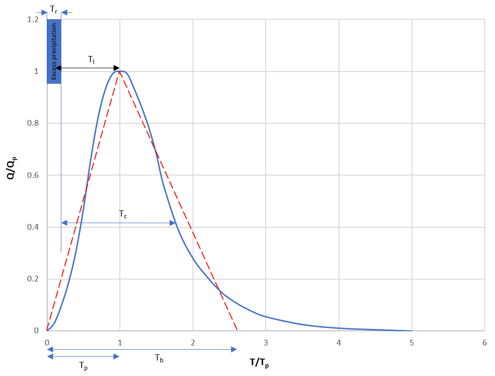
| Name | Units | Description | Regular Range |
|---|---|---|---|
| A | m2 | Surface of the basin |
|
| CN | - | Curve Number | 30 to 100 |
| L | m | Width of the plane | |
| J0 | - | Runoff slope | |
| Ia | mm | Initial abstraction | 0 to 100000 |
| TI | s | Lag time |
First, according to the SCS-CN method, we define the rainfall excess (Qe, in m) as:
\[ Q_{e} = \frac{(P - Ia)^{2}}{P - Ia + \lambda} \text{ for } P > 0.2 \lambda , \text{ else } Q_{e} = 0 \qquad(2.139)\]
Initial abstraction (Ia, in m) is all losses before runoff begins. It includes water retained in surface depressions, water intercepted by vegetation, evaporation, and infiltration. If not specified, Ia will be derived from the Curve Number following equation Equation 2.140.
\[ I_{a} = 0.2 \cdot \lambda \qquad(2.140)\]
with \(\lambda\): potential maximum retention after runoff begins [m], given by equation Equation 2.141:
\[ \lambda = \bigg( \frac{25400}{CN} - 254 \bigg) \cdot \frac{1}{1000} \qquad(2.141)\]
with \(CN\): curve number [-].
The UH can be solved using a simplified form of ‘triangular’ unit hydrograph. Assuming that this triangular unit hydrograph has the same 37.5% of volume on the rising side as the dimensionless UH of Figure 2.10, we can solve for the Tb, which contains entire 100% volume of runoff:
\[ T_{b} = \frac{1}{0.375} \cdot T_{p} = 2.67 \cdot T_{p} \qquad(2.142)\]
Tp (in h) and Qp (in m3/s per unit excess rainfall) can then be derived from the triangular UH. By considering two triangles, we can write the total volume (Q) under the hydrograph:
\[ Q = \frac{Q_{p} \cdot T_{p}}{2} + \frac{Q_{p} \cdot (T_{b} - T_{p})}{2} = \frac{Q_{p}}{2} \cdot 2.67 \cdot T_{p} \qquad(2.143)\]
Since the area under the UH is equivalent to 1 cm, we have (for 1 cm rainfall depth, with A in m2):
\[ \frac{q_{p}}{2} \cdot 2.67T_{p} \cdot 3600 = \frac{A}{100} \qquad(2.144)\]
\[ q_{p} = \frac{2A}{100 \cdot 3600 \cdot 2.67T_{p}} = \frac{2A}{3600 \cdot 2.67 \cdot T_{p}} \text { per m excess rainfall} \qquad(2.145)\]
From the scheme in Figure 2.10, we have the time-of-peak:
\[ T_{p} = \frac{T_{r}}{2} + T_{l} \qquad(2.146)\]
with \(T_r\) (in h) being the duration of the unit excess rainfall and \(T_l\) (in h) the time between the center of mass of excess rainfall and the peak of the UH. In RS MINERVE we numerically apply the UH to each precipitation time interval, therefore Tr is equal to the computation time-step dT in the code. If the lag time parameter (Tl) is not provided, SCS defines it as:
\[ T_{l} = 0.6 \cdot T_{c} \qquad(2.147)\]
with \(T_c\): the time of concentration defined in SI (in h), as:
\[ T_{c} = \frac{227 \cdot L^{0.8}(\lambda + 1)^{0.7}}{10^{5} \sqrt{J0}} \qquad(2.148)\]
with \(L\): the width of plane parameter; \(J0\): the runoff slope parameter.
If Tl is provided, Tc is simply computed from equation Equation 2.147. We can thus compute Tp as:
\[ T_{p} = \frac{dT}{2} + 0.6 \cdot T_{c} \qquad(2.149)\]
And the resulting flow Qp becomes (with Qe the excess rainfall during the time interval dT):
\[ Q_p = q_p \cdot Q_e = \frac {2.08 \cdot 10^{-4} \cdot A}{T_p} \cdot Q_e \qquad(2.150)\]
2.11 Channel routing description
The channel routing can be solved by the St-Venant, Muskingum-Cunge or Kinematic wave. The three possibilities are presented hereafter and their parameters in Table 2.10.
| Name | Units | Description | Regular Range |
|---|---|---|---|
| L | m | Length |
|
| B0 | m | Width of the channel base |
|
| m | - | Side bank relation coefficient (1H/mV) | 0.1 to 1 |
| J0 | - | Slope |
|
| K | m1/3/s | Strickler coefficient | 10 to 90 |
| N | - | Number of sections (not for Lag-Time) |
|
| Lag | min | Lag time (only for Lag-Time) | |
| QIni | m3/s | Initial discharge | - |
2.11.1 St. Venant routing
The St. Venant equations solving the 1D unsteady flow are:
\[ \frac{\partial A}{\partial t} + \frac{\partial Q}{\partial x} = 0 \qquad(2.151)\]
\[ \frac{\partial Q}{\partial t} + \frac{\partial}{\partial x} \bigg( \frac{Q^{2}}{A} + g \cdot I_{1} \bigg) = g \cdot A \cdot \big( J_{0} - J_{f} \big) + g \cdot I_{2} \qquad(2.152)\]
with \(A\): cross sectional flow area [L2]; \(Q\): discharge [L3/T]; \(J_0\): bottom slope; \(J_f\): friction slope [-]; \(I_1\): profile coefficient [L3]; \(I_2\): coefficient for cross sectional variation [L2].
Equation Equation 2.151 expresses the mass conservation while equation Equation 2.152 ensures the conservation of momentum. The term I1 takes into account the shape of the transversal profile and is calculated as follows:
\[ I_{1} = \int_{0}^{h}{(h - \eta) \cdot b(\eta})\ \mathrm{d}\eta \qquad(2.153)\]
The term b represents the cross-sectional variation for the level and constitutes an integration variable according to Figure 2.11. St. Venant equations can be solved in RS MINERVE for a trapezoidal profile (Figure 2.12).
::: {#fig-channel_routing_st_venant layout-ncol=2}
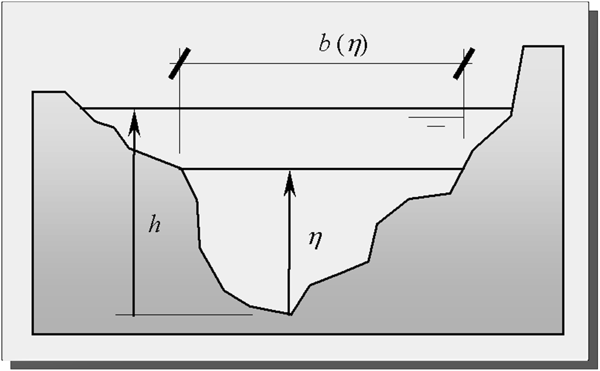
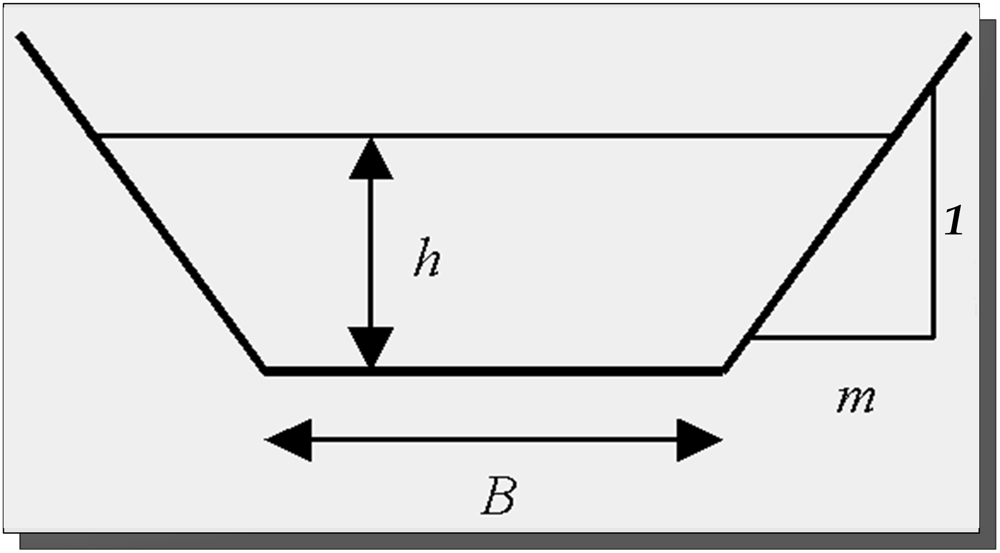
::: Sections of the Channel routing model
For this trapezoidal section, the equation defining I1 is reduced to:
\[ I_1 = \frac {B \cdot h^2}{2} + \frac {m \cdot h^3}{3} \qquad(2.154)\]
with \(B\): width of the base of the transversal profile [L]; \(h\): water level [L]; \(m\): side bank relation coefficient (1 vertical / m horizontal) [-].
The friction slope Jf is calculated according to Manning-Strickler:
\[ J_f = \frac{Q \cdot |Q|}{A^{2} \cdot K^{2} \cdot {R_{h}}^{\frac{4}{3}}} \qquad(2.155)\]
\[ R_h = \frac{A}{L_p} \qquad(2.156)\]
with \(J_f\): friction slope [-]; \(K\): Strickler coefficient [L1/3/T]; \(R_h\): hydraulic radius [L]; \(A\): flow area [L2]; \(L_p\): wetted perimeter [L].
The term I2 takes into account the variation of the section along the channel. In the case of a prismatic channel I2 is equal to zero. In general, I2 is:
\[ I_2 = \int_{0}^{h}{(h - \eta) \ {\frac{\partial b}{\partial x}} |_{h = \eta}} \qquad(2.157)\]
For a prismatic channel, equations Equation 2.151 and Equation 2.152 are solved by the Euler method (first order) as follows:
\[ {A_{j + 1}}^{n + 1} = {A_{j + 1}}^{n} - \frac{\Delta t}{\Delta x}({Q_{j + 1}}^{n} - {Q_{j}}^{n}) \qquad(2.158)\]
\[ {Q_{j + 1}}^{n + 1} = {Q_{j + 1}}^{n} - \frac{\Delta t}{\Delta x}(\frac{({Q_{j + 1}}^{n})^{2}}{{A_{j + 1}}^{n}} - \frac{({Q_{j}}^{n})^{2}}{{A_{j}}^{n}} + g \cdot {I_{1,j + 1}}^{n} - g \cdot {I_{1,j}}^{n}) + \Delta t \cdot g \cdot \frac{({A_{j}}^{n} + {A_{j + 1}}^{n})}{2} \cdot J_{0} - \Delta t \cdot g \cdot {A_{j + 1}}^{n} \cdot {{J_{f}}_{j + 1}}^{n} \qquad(2.159)\]
with \(j\) and \(j+1\) representing the spatial position; \(n\) and \(n+1\) representing the time increment; \(g\): gravity constant [L2/T]; \(\Delta x\): longitudinal increment [L].
The downstream boundary condition used by RS MINERVE is the normal flow depth.
In practice, according to the physical situation to be simulated, some terms of the complete dynamic equations can be eliminated in order to get simplified expressions without losing precision. Applicable solutions are the diffusive and kinematic waves which are presented in the following.
2.11.2 Muskingum-Cunge routing
Ruling out the first two terms of equation Equation 2.152 yields:
\[ \frac{\partial I_{1}}{\partial x} = A \cdot \left( J_{0} - J_{f} \right) + I_{2} \qquad(2.160)\]
This new equation corresponds to the approximation of the diffusive wave. With the supplementary hypothesis of a prismatic channel (Cunge, 1991) it is possible to express equation Equation 2.152 as follows:
\[ \frac{\partial Q}{\partial t} + \bigg( \frac{Q}{BD}\frac{\mathrm{d}D}{\mathrm{d}h} \bigg) \cdot \frac{\partial Q}{\partial x} - \frac{D^{2}}{2 \cdot B \cdot |Q|} \cdot \frac{\partial^{2}Q}{\partial x^{2}} = 0 \qquad(2.161)\]
with \(B\): width of the bottom of the transversal profile [L]; \(D\): discharge rate [L3/T].
The discharge rate is the capacity of a cross section of a channel to transport a certain flow and is defined as:
\[ Q = D \cdot {J_{0}}^{\frac{1}{2}} \qquad(2.162)\]
Equation Equation 2.161 is an equation with partial derivatives of parabolic type which represents the convection and the diffusion of the variable Q. Hence, the flow transported with a velocity c (equation Equation 2.163) and diffused with a diffusion coefficient (equation Equation 2.164):
\[ c = \frac{Q}{B \cdot D} \cdot \frac{\mathrm{d}D}{\mathrm{d}h} \qquad(2.163)\]
\[ \delta = \frac{D^{2}}{2B \cdot |Q|} \qquad(2.164)\]
Based on the hypothesis of a clearly defined relation between the flow Q and the water level h, equation Equation 2.161 is reduced to:
\[ \frac{\partial Q}{\partial t} + \bigg( \frac{\mathrm{d}Q}{\mathrm{d}A} \bigg)_{x_{0}} \cdot \frac{\partial Q}{\partial x} = 0 \qquad(2.165)\]
This equation is called “equation of the kinematic wave” and describes the simple convection of the flow with a velocity c according to equation Equation 2.163. It can be solved by the following numerical finite difference scheme:
\[ \frac{\partial Q}{\partial t} \approx \frac{X \cdot \big( {Q_{j}}^{n + 1} - {Q_{j}}^{n} \big) + (1 + X) \cdot \big( {Q_{j + 1}}^{n + 1} - {Q_{j + 1}}^{n} \big)}{\Delta t} \qquad(2.166)\]
\[ \frac{\partial Q}{\partial x} \approx \frac{\frac{1}{2} \cdot \big( {Q_{j + 1}}^{n + 1} - {Q_{j}}^{n + 1} \big) + \frac{1}{2} \cdot \big( {Q_{j + 1}}^{n} - {Q_{j}}^{n} \big)}{\Delta x} \qquad(2.167)\]
Applying this scheme to equation Equation 2.165 yields:
\[ \frac{X \cdot \big( {Q_{j}}^{n + 1} - {Q_{j}}^{n} \big) + (1 + X) \cdot \big( {Q_{j + 1}}^{n + 1} - {Q_{j + 1}}^{n} \big)}{c \cdot \Delta t} + \frac{\frac{1}{2} \cdot \big( {Q_{j + 1}}^{n + 1} - {Q_{j}}^{n + 1} \big) + \frac{1}{2} \cdot \big( {Q_{j + 1}}^{n} - {Q_{j}}^{n} \big)}{\Delta x} = 0 \qquad(2.168)\]
We can express the solution of this equation as a function of the unknown variable Qj+1n+1 namely:
\[ {Q_{j + 1}}^{n + 1} = C_1 \cdot {Q_{j}}^{n + 1} + C_2 \cdot {Q_{j}}^{n} + C_3 \cdot {Q_{j + 1}}^{n} \qquad(2.169)\]
with:
\[ \begin{matrix} C_1 = - \frac{K \cdot X - \frac{\Delta t}{2}}{K \cdot (1 - X) + \frac{\Delta t}{2}} \\ C_2 = \frac{K \cdot X + \frac{\Delta t}{2}}{K \cdot (1 - X) + \frac{\Delta t}{2}} \\ C_3 = \frac{K \cdot (1 - X) - \frac{\Delta t}{2}}{K \cdot (1 - X) + \frac{\Delta t}{2}} \\ \end{matrix} \qquad(2.170)\]
\[ K = \frac{\Delta x}{c} \qquad(2.171)\]
\[ c = \frac{{Q_{j + 1}}^{n} - {Q_{j}}^{n}}{{A_{j + 1}}^{n} - {A_{j}}^{n}} \qquad(2.172)\]
Here, hydraulic engineers might recognize the equation of Muskingum (Boillat, 1980) corresponding to the name of the river localized in the United States where the method was employed for the first time. The Muskingum method represents an approximation by finite differences of the equation for the kinematic wave. This is not only an appearance since developing the terms of equation Equation 2.168 in terms of a Taylor series around the point (j, n) assuming x/t = c and neglecting the quadratic terms (x^2) the equation can be written as follows:
\[ \frac{\partial Q}{\partial t} + c \cdot \frac{\partial Q}{\partial x} - c \cdot B\frac{\partial^{2}Q}{\partial x^{2}} = 0 \qquad(2.173)\]
\[ B = \Delta x \cdot \bigg( \frac{1}{2} - X \bigg) \qquad(2.174)\]
According to this analysis proposed by Cunge (1969) it can be recognized that the Muskingum equation is a solution in terms of finite differences of the equation of the diffusive wave (Equation 2.161) under the condition of correctly introducing the value of the parameters K and X. K is defined by equation Equation 2.171 and according to the celerity c (equation Equation 2.174), X corresponds to:
\[ X = \frac{1}{2} - \frac{D^3}{2 \cdot \Delta x \cdot |Q| \cdot Q \cdot \frac{\mathrm{d}D}{\mathrm{d}h}} \qquad(2.175)\]
This function of the diffusive wave implemented at present in RS MINERVE is capable of solving the Muskingum-Cunge equation for the trapezoidal geometry of a transversal profile according to Figure 2.12.
2.11.3 Kinematic Wave routing
In the kinematic wave model the terms of inertia and pressure of the St. Venant equations are supposed to be negligible. As a consequence, the cinematic hypothesis supposes that the gravity forces are identical, though with an opposite sign, to the friction forces. This implies that there is an explicit relationship between the flow and the water level (measured normal water depth).
The equation of the cinematic wave as presented in the previous chapter is presented as follows:
\[ \frac{\partial Q}{\partial t} + \left( \frac{dQ}{dA} \right)_{x_{0}} \cdot \frac{\partial Q}{\partial x} = 0 \qquad(2.176)\]
This is a simple equation of convection which indicates that the flow Q is transported downstream with a celerity c which is defined as:
\[ c = \frac{\partial Q}{\partial A} \qquad(2.177)\]
This rather simple model transports each point of the hydrograph from upstream to downstream with a velocity c. Since no diffusive term appears in the equation the peak discharge remains constant and is not reduced. On the contrary, the general behaviour of a flood is modified, since high discharges are transferred downstream more rapidly than small ones.
The initial parameters are identical to those of the model of the diffusive wave. The geometry for the transversal profiles also corresponds to the same than for the Muskingum-Cunge method (trapezoidal channels, Figure 2.12). Opposite to the model of the diffusive wave, no reduction of the flood is produced as mentioned previously. The solution is performed according to the following equations:
\[ c = \frac{{Q_{j + 1}}^{n} - {Q_{j}}^{n}}{{A_{j + 1}}^{n} - {A_{j}}^{n}} \qquad(2.178)\]
\[ \alpha = c \cdot \frac{\Delta t}{\Delta L} \qquad(2.179)\]
\[ {Q_{j + 1}}^{n + 1}= \begin{cases} \alpha \cdot {Q_{j}}^{n} + (1 - \alpha) \cdot {Q_{j + 1}}^{n} & \quad \text{if } \alpha \leq 1 \\ 1/\alpha \cdot {Q_{j}}^{n} + (1 - \frac{1}{\alpha}) \cdot {Q_{j}}^{n + 1} & \quad \text{if } \alpha > 1 \end{cases} \qquad(2.180)\]
2.11.4 Lag-time
The lag-time model is the simpler routing model where upstream and downstream flows are delayed by a fixed lag time called Lag (in minutes).
2.12 Time series
In this object, temporary series of flow, precipitation, temperature or ETP can be directly introduced. The time is incorporated in seconds and the associated values in their corresponding units, in tabular form “t [s] - value [depending on the series]”.
| Name | Units | Description |
|---|---|---|
| Series (paired data) | s (depending on the series) | Time - Value series |
2.13 Reservoir
The transient evolution of a water volume \(V\) in a reservoir is described by the following retention equation:
\[ \frac{\mathrm{d}V}{\mathrm{d}t} = Q_{e} - Q_{s} \qquad(2.181)\]
with \(V\): volume in the reservoir [L3]; \(Q_e\): inflow in the reservoir [L3/T]; \(Q_s\): outflow [L3/T].
Usually, reservoirs are equipped with turbines, pumps and spillways depending on the water level in the reservoir. To solve equation Equation 2.181, it is necessary to know the outflow as a function of the water volume \(V\) in the reservoir. This operation is possible if relation between the water level and the water volume is known (Table 2.12).
| Name | Units | Description |
|---|---|---|
| H-V (paired data) | masl - m3 | Level - Volume relation |
| Hini | masl | Initial level in the reservoir |
2.14 Level-Discharge Relation (HQ)
The HQ object provides an outflow depending on a level in a reservoir. The outflow is calculated by the help of a “Level - Discharge” relation (Table 2.13). Hence, the discharge in then calculated as follows:
\[ {Q_{outflow}}^{n} = \begin{cases} 0 & \quad \text{if } H^n < H_{1} \\ Q_{dev,i} + (H_{i + 1} - H^{n}) \cdot \frac{Q_{outflow,i+1} - Q_{outflow,i}}{H_{i+1} - H_i} & \quad \text{if } H_i < H^n < H_{i+1} \\ \end{cases} \qquad(2.182)\]
with \({Q_{outflow}}^n\): discharge at instant n [L3/T]; \(H^n\): water level at instant n [L]; \(Q_{outflow,i}\): discharge flow for a water level \(H_i\) [L3/T]; \(H_i\): reservoir water level [L].
| Name | Units | Description |
|---|---|---|
| H-Q (paired data) | masl - m3/s | Level - Discharge relation |
2.15 Turbine
In this object, temporary series of flow can be directly introduced to provide an outflow in a reservoir. The time is incorporated in seconds and the associated values in their corresponding units, in tabular form “t [s] - discharge”. The final discharge also depends on the level reservoir as presented in next equations:
\[ {Q_{turbine}}^n = \begin{cases} {Q_{wanted}}^{n} & \quad \text{if } \left( H^{n} > H_{on} \right) \text{ or } (H_{off} \leq H^{n} \leq H_{on} \text{ and } IsOperating = 1) \\ 0 & \quad \text{if } \left( H^{n} < H_{off} \right) \text{ or } (H_{off} \leq H^{n} \leq H_{on} \text{ and } IsOperating = 0) \\ \end{cases} \qquad(2.183)\]
with \({Q_{turbine}}^n\): discharge at instant n [L3/T]; \(H^n\): water level at instant n [L]; \({Q_{wanted}}^n\): discharge flow wanted at instant n [L3/T]; \(Hon\): Threshold in the level of the reservoir to start the turbine cycle [L]; \(Hoff\): Threshold in the level of the reservoir to stop the turbine cycle [L]; \(IsOperating\): Planned turbine cycle at instant t [0/1].
| Name | Units | Description |
|---|---|---|
| H-Q (paired data) | masl - m3/s | Level - Discharge relation |
| Hon | masl | Threshold in the level of the reservoir to start the turbine cycle (turbine starts when the threshold is exceeded) |
| Hoff | masl | Threshold in the level of the reservoir to stop the turbine cycle (turbine stops when level go below the threshold) |
| IsOper atingIni | 0/1 | First suggested value for the turbine cycle (0 = not turbine; 1 = turbine). Only taken into account if Hoff > H > Hon |
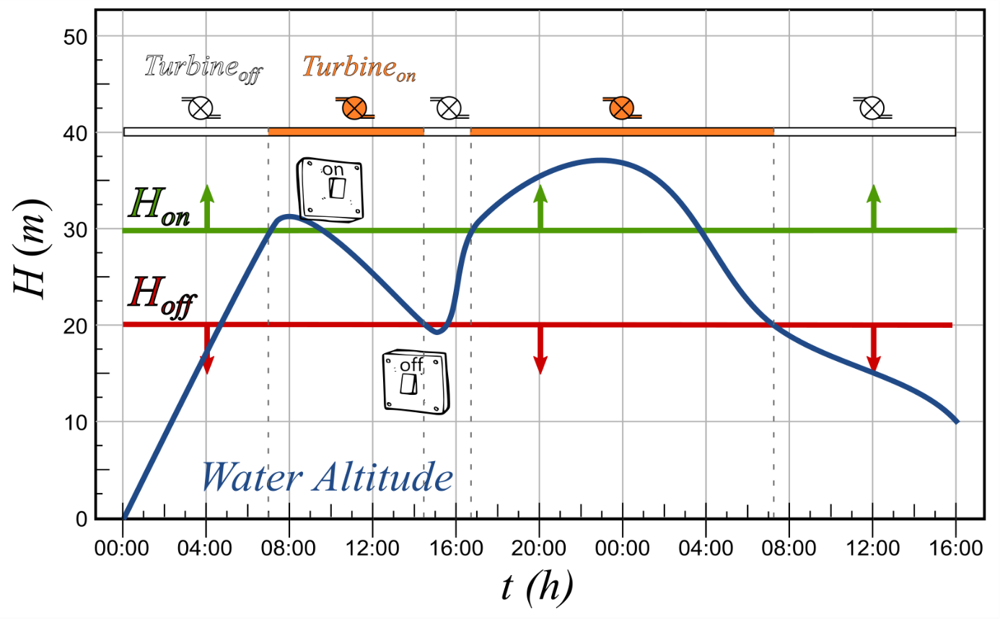
2.16 Hydropower
The inputs of this object are a reservoir level and a discharge. It also needs the paired data relation “Discharge (Q) - Performance (\(\eta\))” for the turbine, the altitude (Zcentral) of the hydropower plant, the length (L), the diameter (D) and the roughness (K) of the pipe as well as the kinematic viscosity of the fluid (*).
As outputs, the object calculates not only the power and the revenue for each time step, as presented in equations Equation 2.184 to Equation 2.186, but also the total energy produced and the total obtained revenue. For this calculation, it takes into account the head loss in terms of volumetric flow rate in a full-flowing circular pipe from the Darcy-Weisbach equation (Darcy, 1857; Simmons, 2008).
\[ {Z_{net}}^{n} = ({Z_{water}}^{n} - Z_{central}) - f \cdot \frac{8 \cdot L \cdot {Q^{n}}^{2}}{g \cdot \pi^{2} \cdot D^{5}} \qquad(2.184)\]
\[ Power^{n} = \eta^{n} \cdot 1000 \cdot Q^{n} \cdot g \cdot {Z_{net}}^{n} \qquad(2.185)\]
\[ Revenue^{n} = Power^{n} \cdot Price^{n} \qquad(2.186)\]
with \({H_{net}}^n\): net height at instant n [L]; \({Z_{water}}^n\): water height in the reservoir at instant n [L]; \(Z_{central}\): hydropower plant altitude [L]; \(f\): friction factor [-]; \(L\): length of the pipe [L]; \(Q^n\): discharge at instant n [L3/T]; \(g\): gravity, 9.81 [L2/T]; \(D\): diameter [L]; \(Power^n\): power at instant n [Watt]; \(\eta\): performance of the turbine at instant n [%]; \(Revenue^n\): Revenue of the turbine at instant n [/Kwh]; \(Price^n\): Price of the energy at instant n [/Kwh].
If the discharge actually provided to the object Hydropower is higher than the range proposed in the relation Q-of this object, the maximum discharge of the paired data Q-is taken for the energy production calculations.
| Name | Units | Description |
|---|---|---|
| Q- (paired data) | m^ 3^/s - % | Discharge-Performance relation |
| Zplant | masl | Hydropower plant altitude |
| L | m | Length of the pipe |
| D | m | Diameter of the pipe |
| K | m | Roughness |
| m2/s | Kinematic viscosity | |
| Default Price | eu ro/Kwh | Default price, only used if no data exists in the database |
A default price can be introduced for first approximation of the revenue. It is used only if the object does not have a price series in the database.
For the calculation of the friction factor f of the Darcy-Weisbach equation, the equation of Colebrook-White (Colebrook and White, 1937; Colebrook, 1939) is used. It is presented in equation Equation 2.187, where represents f. In addition, the Reynolds number, Re*, is presented in equation Equation 2.188.
\[ \frac{1}{\sqrt{\lambda}} = - 2 \cdot log_{10}\left( \frac{k/D}{3.7} + \frac{2.51}{Re \cdot \sqrt{\lambda}} \right) \qquad(2.187)\]
\[ Re = v \cdot \frac{D}{\upsilon} \qquad(2.188)\]
with \(\lambda\): friction factor [-]; \(k\): roughness [L]; \(Re\): Reynolds number [-]; \(v\): velocity [L/T]; \(\upsilon\): kinematic viscosity [L2/T]
The equation Equation 2.187 is solved for the range of discharges of the paired data *Q-, providing the paired data relation “Discharge (Q) - Friction factor ()” for user information.
2.17 Diversion
This object needs the paired data relation “Inflow - Diverted flow” as information as well as the incoming hydrograph. The relation describes the behaviour of the diversion and is generated by the user, who performs a calculation for the behaviour of the diversion and then creates the relation “Inflow - Diverted flow”.
With this information, the Diversion calculates the diverted hydrograph and the downstream hydrograph, as presented in equation Equation 2.189:
\[ {Q_{up}}^{n} = {Q_{down}}^{n} + {Q_{diverted}}^{n} \qquad(2.189)\]
with \({Q_{up}}^n\): total flow upstream at instant n [L3/T]; \({Q_{diverted}}^n\): diverted flow at instant n [L3/T]; \({Q_{down}}^n\): downstream flow at instant n [L3/T].
| Name | Units | Description |
|---|---|---|
| Qup-Qdiverted (paired data) | m3/s - m3/s | Upstream flow - Diverted flow relation |
2.18 Consumer
The Consumer object is used to take into account a consumption site (agriculture, cities, etc.). A series in the database is used as the demand of the Consumer object. If no information about consummation exists in the database, the parameter “Default QDemand” is used for the whole period of the simulation as uniform demand.
The LossRate parameter provides the distribution losses of a demand site (physical leaks, clandestine connections, etc.). If the input discharge (Qup) is sufficient, the delivered flow (Qdelivered) is equal to the Qdemand and the supply requirement (Qsupplied) is equal to the Qdemand divided by (1-LossRate), otherwise the supply requirement is equal to the input discharge (Qup). Then, the ConsumptionRate parameter is used to determine the discharge consumed by the demand site and which is lost (evaporation, embodied products, etc). The discharge remainder (Qreturn) is returned to the main system. The output flow is equal to the input flow minus the losses and the effective consumption (Qconsumed).
The Consumer object calculates the losses, the consumed discharge as well as the downstream hydrograph, as presented in next equations. At the same time, the object also calculates the unmet demand and the demand coverage (%) series during the simulation period.
\[ {Q_{supplied}}^{n} = min \bigg( \frac{{Q_{demand}}^{n}}{1 - LossRate};{Q_{up}}^{n} \bigg) \qquad(2.190)\]
\[ {Q_{stream}}^{n} = {Q_{up}}^{n} - {Q_{supplied}}^{n} \qquad(2.191)\]
\[ {Q_{losses}}^{n} = {Q_{supplied}}^{n} \cdot LossRate \qquad(2.192)\]
\[ {Q_{delivered}}^{n} = {Q_{supplied}}^{n} \cdot (1 - LossRate) \qquad(2.193)\]
\[ {Q_{UnmetDemand}}^{n} = {Q_{demand}}^{n} - {Q_{delivered}}^{n} \qquad(2.194)\]
\[ {DemandCoverage}^{n} = \frac{{Q_{demand}}^{n} - {Q_{delivered}}^{n}}{{Q_{demand}}^{n}} \cdot 100 \qquad(2.195)\]
\[ {Q_{consumed}}^{n} = {Q_{delivered}}^{n} \cdot ConsumptionRate \qquad(2.196)\]
\[ {Q_{return}}^{n} = {Q_{delivered}}^{n} \cdot (1 - ConsumptionRate) \qquad(2.197)\]
\[ {Q_{down}}^{n} = {Q_{up}}^ {n} - {Q_{losses}}^{n} - {Q_{consumed}}^{n} \qquad(2.198)\]
with \({Q_{demand}}^n\): demanded consumption at instant n [L3/T]; \({Q_{up}}^n\): total flow upstream at instant n [L3/T]; \(LossRate\): fraction of the Qsupplied lost at the demand site [-]; \({Q_{supplied}}^n\): supplied discharge at instant n [L3/T]; \({Q_{stream}}^n\): discharge that flows downstream after the initial supply at instant n [L3/T]; \({Q_{losses}}^n\): part of the Qsupplied discharge that is lost at instant n [L3/T]; \(LossRate\): fraction of the Qsupplied discharge that will be lost before its delivery [-]; \({Q_{delivered}}^n\): part of the Qsupplied discharge that is not lost at instant n [L3/T]; \({Q_{UnmetDemand}}^n\): discharge shortfall at the consumption site at instant n [L3/T]; \(DemandCoverage\): percentage of the demand covered by the delivered discharge at instant n [%]; \(ConsumptionRate\): fraction of the Qdelivered ultimately consumed [-]; \({Q_{consumed}}^n\): discharge consumed at the consumption site at instant n [L3/T]; \({Q_{return}}^n\): discharge returning downstream from the consumption site at instant n [L3/T]; \({Q_{down}}^n\): downstream flow at instant n [L3/T].
| Name | Units | Description |
|---|---|---|
| LossRate | - | Fraction of the Qsupplied lost at the demand site |
| ConsumptionRate | - | Fraction of the Qdelivered ultimately consumed |
| Default QDemand | m3/s | Default demand of consummation, only used if no data exists in the database |
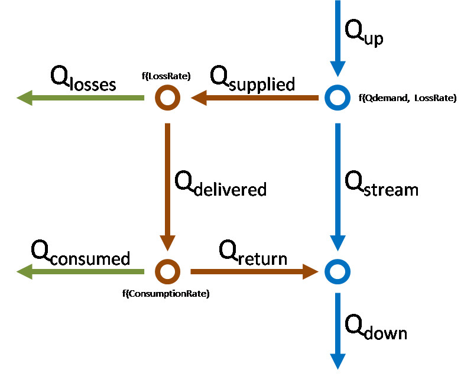
2.19 Structure efficiency
This object needs an efficiency coefficient as information to describe the efficiency of a structure such a canal or a pipe, as well as the incoming hydrograph.
An efficiency of 1 provides an output flow equivalent to the input hydrograph. An efficiency of 0 generates a complete loss of the input.
The downstream hydrograph is calculated as presented in equation Equation 2.199 and Equation 2.200:
\[ {Q_{down}}^{n} = {Q_{up}}^{n} \cdot \text{Efficiency} \qquad(2.199)\]
\[ {Q_{lost}}^{n} = {Q_{up}}^{n} \cdot (1 - \text{Efficiency}) \qquad(2.200)\]
with \({Q_{up}}^n\): total flow upstream at instant n [L3/T]; \({Q_{lost}}^n\): lost flow at instant n [L3/T]; \({Q_{down}}^n\): downstream flow at instant n [L3/T].
| Name | Units | Description |
|---|---|---|
| Efficiency | - | Efficiency of the structure |
2.20 Planner
When a planner object is selected, a manage system is generated. Inside this object, several Rules can be created. All the rules will be computed, from first one to last one. In each rule define several Conditions is possible and also create combinations between them (with AND or OR operators). The rule will be applied if the combined condition (or an individual condition) is satisfied.
| Operator | Combined condition is satisfied when |
|---|---|
| OR | Left condition OR Right condition are satisfied |
| AND | Left condition AND Right condition are satisfied |
A typical example of planner is the implementation of a turbine / pump law as a function of the water level in the reservoir. Thus, some Rules should be created with different conditions regarding to reservoir levels or, in some cases, to results from other objects.
| Object | Name | Units | Description |
|---|---|---|---|
| Planner | Rule | - | Rule to be applied regarding at least one condition |
| Rules | Condition | - | Expression to be evaluated and if it is satisfied the parent rule will be applied |
The possible operators to use inside the conditions are presented in Table 2.20.
| Operator | Definition |
|---|---|
| > | Bigger than |
| Bigger than or equal to | |
| = | Equal to |
| Smaller than or equal to | |
| < | Smaller than |
2.21 Comparator
The Comparator object calculates ten performance indicators by comparing a simulated and a reference (observed) timeseries. The warm up period parameter (in days) is used for the initialization of the model state variables. Note that this time period starts at the beginning of and must be shorter than the simulation period and is not used to compute the performance indicators. The description of each indicator is presented in Chapter 3.
Moreover, for the calculation of threshold-based indicators (Peirce Skill Score and Overall Accuracy), the definition of both the reference and the simulation thresholds is required (Table 2.22).
| Name | Units | Description |
|---|---|---|
| Reference threshold | (depends on the variable) | Threshold used by threshold-based indicators (returns TRUE if reference value > threshold) |
| Simulation threshold | (depends on the variable) | Threshold used by threshold-based indicators (returns TRUE if simulation value > threshold) |
| Warm up period | Days | Warm up period, not used for indicators computation |
The precipitation and evapotranspiration gradients are function of the local conditions. Their regular ranges have to be estimated for each studied case.↩︎
The precipitation and evapotranspiration gradients are function of the local conditions. Their regular ranges have to be estimated for each studied case.↩︎
If the Tension Water storage of the Lower Zone is completely full, then percolation goes entirely to the 2 Free Water storages.↩︎